PASS img-aspect-ratio-box · fixed-width-derived-height

A box with width:200px and aspect-ratio:2/1, expected to derive a 100px height.

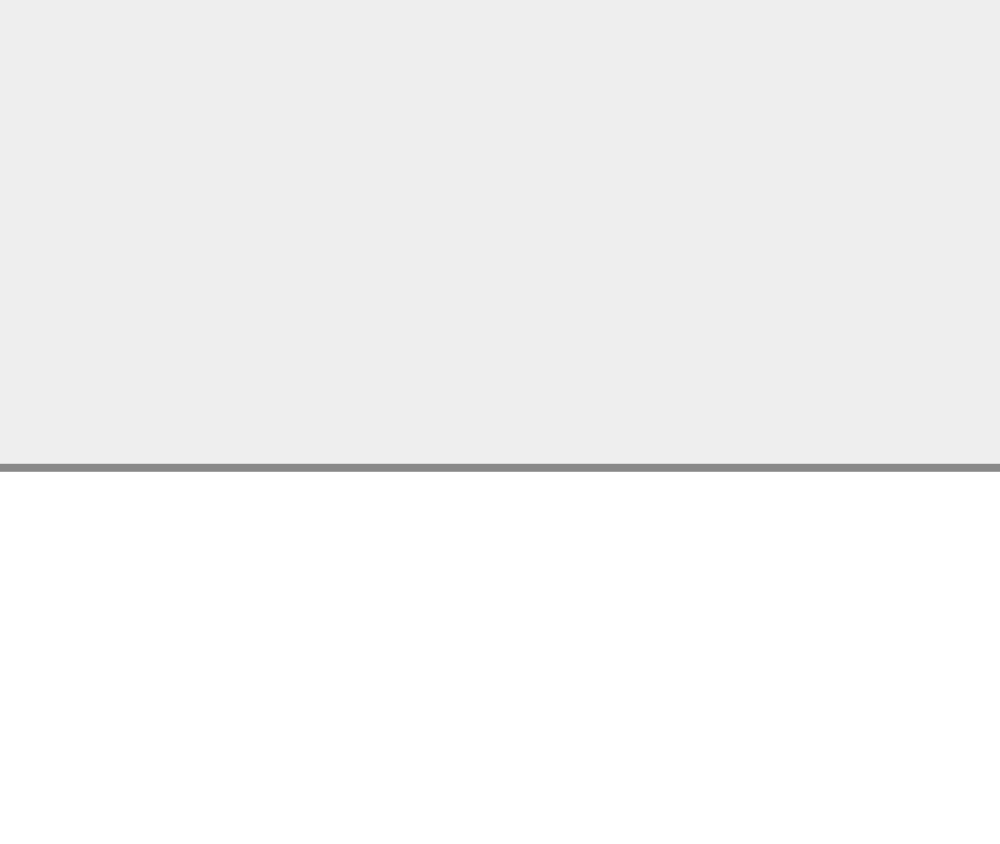


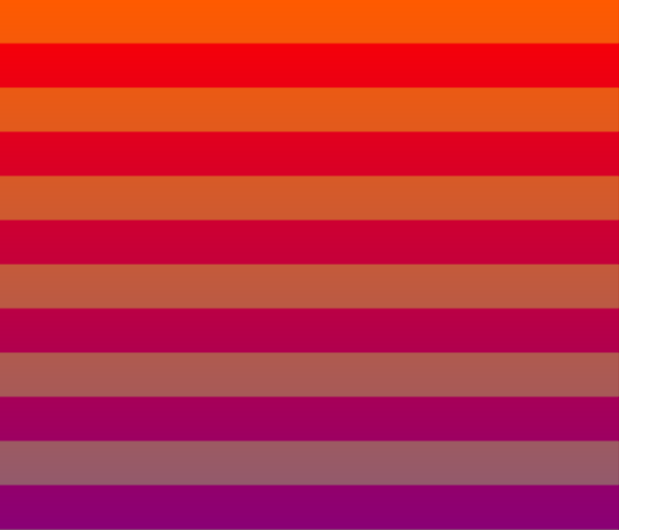


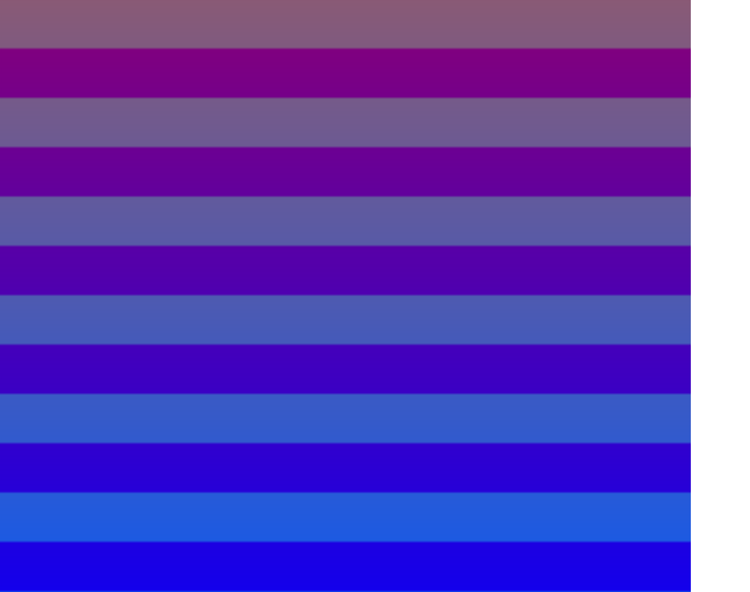
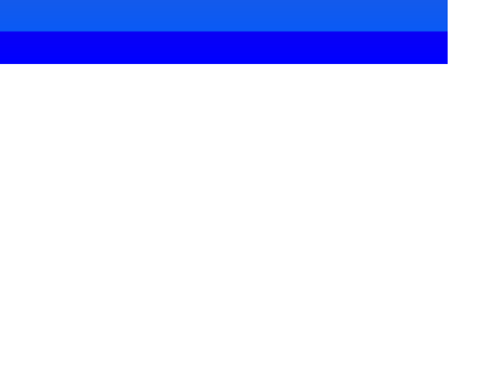


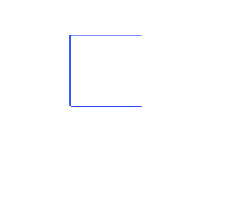
| class | regions | pixels | union bbox (CSS px) | largest px | maximum magnitude |
|---|---|---|---|---|---|
| ColorErr | 1 | 1826 | 43,22 → 90,68 | 1826 | total 2.3% · largest 2.3% · max ΔE 0.2 |
| Extra | 1 | 1 | 90,22 → 90,22 | 1 | total 0.001262% · largest 0.001262% |
| Missing | 1 | 2 | 90,68 → 90,68 | 2 | total 0.002524% · largest 0.002524% |
| class | bbox (CSS px) | area% | magnitude | reason |
|---|---|---|---|---|
| ColorValue | 43,22 → 90,68 | 2.3 | ΔE 0.2 ΔRGB(-1,0,0) | fill recolour ΔRGB(-1,+0,+0) (ΔE 0.2) |
| Missing | 90,68 → 90,68 | 0.002524 | candidate lacks paint present in reference (0.002524%) | |
| Extra | 90,22 → 90,22 | 0.001262 | candidate adds paint absent from reference (0.001262%) |
1<!DOCTYPE html>
2<html lang="en">
3<head>
4<meta charset="utf-8">
5<style>
6 @page { size: 144px 136px; margin: 0; }
7 html { font-family: ParitySans; line-height: 1.5; }
8 * { margin: 0; box-sizing: border-box; }
9 html, body { background: #ffffff; }
10 .slot {
11 width: 90px;
12 height: 90px;
13 background: #c62828;
14 }
15 .slot img {
16 display: block;
17 width: 90px;
18 height: 90px;
19 object-fit: contain;
20 image-orientation: 90deg;
21 image-rendering: pixelated;
22 }
23</style>
24</head>
25<body>
26 <div class="slot">
27 <img alt="" src="data:image/png;base64,iVBORw0KGgoAAAANSUhEUgAAAAgAAAAECAIAAAA8r+mnAAAAFUlEQVR42mM4pqEBR1z1enDEQD0JAMyPHNFwKtUxAAAAAElFTkSuQmCC">
28 </div>
29</body>
30</html>


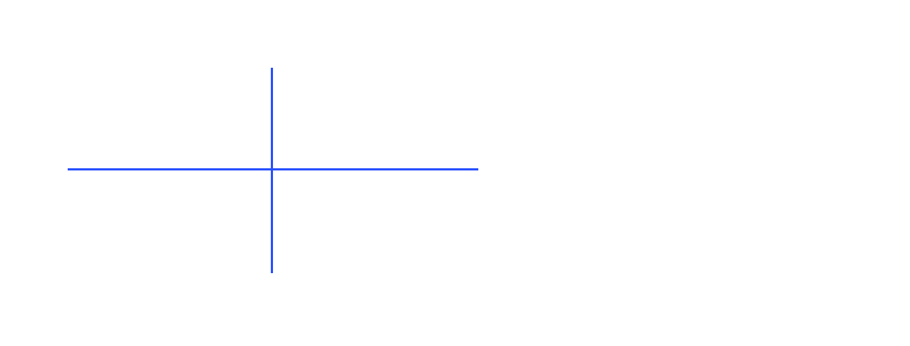
| class | regions | pixels | union bbox (CSS px) | largest px | maximum magnitude |
|---|---|---|---|---|---|
| ColorErr | 1 | 2808 | 0,0 → 180,90 | 2808 | total 1.2% · largest 1.2% |
| class | bbox (CSS px) | area% | magnitude | reason |
|---|---|---|---|---|
| ColorValue | 0,0 → 180,90 | 1.2 | ΔRGB(0,14,-1) | fill recolour ΔRGB(+0,+14,-1) (ΔE 0) |
1<!DOCTYPE html>
2<html lang="en">
3<head>
4<meta charset="utf-8">
5<title>img height scaled aspect preserved</title>
6<style>
7 @page { size: 400px 152px; margin: 0; }
8 html { font-family: ParitySans; line-height: 1.5; }
9 * { margin: 0; box-sizing: border-box; }
10 html, body { background: #ffffff; }
11 .stage { width: 260px; margin: 30px; background: #eeeeee; }
12 /* height set, width auto: a 2:1 intrinsic image stays 2:1, so height:90px
13 derives width:180px from the aspect ratio. */
14 img {
15 display: block; width: auto; height: 90px; image-rendering: pixelated;
16 }
17</style>
18</head>
19<body>
20 <div class="stage">
21 <img alt="" height="90" src="data:image/png;base64,iVBORw0KGgoAAAANSUhEUgAAAAgAAAAECAIAAAA8r+mnAAAAIElEQVR42mM4IScHR3I9NnDEgFNCzu0EHN1ZJQJHOCUAni4lgeO2HLIAAAAASUVORK5CYII=">
22 </div>
23</body>
24</html>
| class | regions | pixels | union bbox (CSS px) | largest px | maximum magnitude |
|---|---|---|---|---|---|
| ColorErr | 1 | 2808 | 0,0 → 180,90 | 2808 | total 1.2% · largest 1.2% |
| class | bbox (CSS px) | area% | magnitude | reason |
|---|---|---|---|---|
| ColorValue | 0,0 → 180,90 | 1.2 | ΔRGB(0,14,-1) | fill recolour ΔRGB(+0,+14,-1) (ΔE 0) |
1<!DOCTYPE html>
2<html lang="en">
3<head>
4<meta charset="utf-8">
5<title>img width scaled aspect preserved</title>
6<style>
7 @page { size: 400px 152px; margin: 0; }
8 html { font-family: ParitySans; line-height: 1.5; }
9 * { margin: 0; box-sizing: border-box; }
10 html, body { background: #ffffff; }
11 .stage {
12 width: 260px;
13 margin: 30px;
14 background: #eeeeee;
15 }
16 /* width set, height auto: a 2:1 intrinsic image stays 2:1 (180x90). */
17 img {
18 display: block;
19 width: 180px;
20 height: auto;
21 image-rendering: pixelated;
22 }
23</style>
24</head>
25<body>
26 <div class="stage">
27 <img alt="" width="180" src="data:image/png;base64,iVBORw0KGgoAAAANSUhEUgAAAAgAAAAECAIAAAA8r+mnAAAAIElEQVR42mM4IScHR3I9NnDEgFNCzu0EHN1ZJQJHOCUAni4lgeO2HLIAAAAASUVORK5CYII=">
28 </div>
29</body>
30</html>
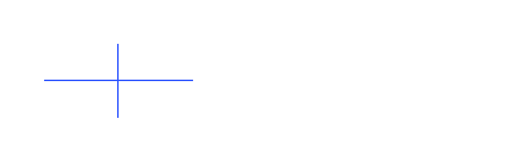
| class | regions | pixels | union bbox (CSS px) | largest px | maximum magnitude |
|---|---|---|---|---|---|
| ColorErr | 1 | 1558 | 0,0 → 100,50 | 1558 | total 1.6% · largest 1.6% |
| class | bbox (CSS px) | area% | magnitude | reason |
|---|---|---|---|---|
| ColorValue | 0,0 → 100,50 | 1.6 | ΔRGB(0,8,-1) | fill recolour ΔRGB(+0,+8,-1) (ΔE 0) |
1<!DOCTYPE html>
2<html lang="en">
3<head>
4<meta charset="utf-8">
5<title>img percentage width</title>
6<style>
7 @page { size: 344px 112px; margin: 0; }
8 html { font-family: ParitySans; line-height: 1.5; }
9 * { margin: 0; box-sizing: border-box; }
10 html, body { background: #ffffff; }
11 .stage { width: 200px; margin: 30px; background: #eeeeee; }
12 /* width:50% of the 200px containing block = 100px wide; height auto keeps the
13 2:1 aspect ratio so the image is 100x50. */
14 img { display: block; width: 50%; height: auto; image-rendering: pixelated; }
15</style>
16</head>
17<body>
18 <div class="stage">
19 <img alt="" src="data:image/png;base64,iVBORw0KGgoAAAANSUhEUgAAAAgAAAAECAIAAAA8r+mnAAAAIElEQVR42mM4IScHR3I9NnDEgFNCzu0EHN1ZJQJHOCUAni4lgeO2HLIAAAAASUVORK5CYII=">
20 </div>
21</body>
22</html>
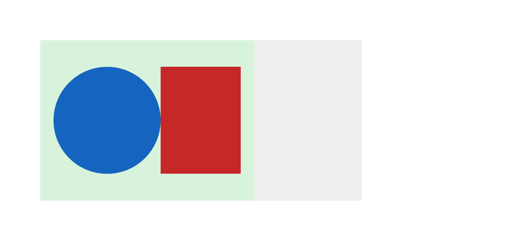
| class | regions | pixels | union bbox (CSS px) | largest px | maximum magnitude |
|---|---|---|---|---|---|
| ColorErr | 146 | 206 | 10,20 → 90,100 | 6 | total 0.07% · largest 0.002133% |
| class | bbox (CSS px) | area% | magnitude | reason |
|---|---|---|---|---|
| AntialiasCoverage | 31,24 → 32,24 | 0.002133 | ΔRGB(-12,-9,-1) | antialiasing coverage residue on a shared outline |
| AntialiasCoverage | 67,24 → 68,24 | 0.002133 | ΔRGB(-12,-9,-1) | antialiasing coverage residue on a shared outline |
| AntialiasCoverage | 38,21 → 38,21 | 0.001067 | ΔRGB(-12,-9,-1) | antialiasing coverage residue on a shared outline |
| AntialiasCoverage | 61,21 → 62,21 | 0.001067 | ΔRGB(-12,-9,-1) | antialiasing coverage residue on a shared outline |
| AntialiasCoverage | 14,42 → 14,43 | 0.001067 | ΔRGB(-18,-13,-2) | antialiasing coverage residue on a shared outline |
| AntialiasCoverage | 86,42 → 86,43 | 0.001067 | ΔRGB(-18,-13,-2) | antialiasing coverage residue on a shared outline |
| AntialiasCoverage | 12,46 → 12,47 | 0.001067 | ΔRGB(-11,-7,-2) | antialiasing coverage residue on a shared outline |
| AntialiasCoverage | 87,46 → 88,47 | 0.001067 | ΔRGB(-11,-7,-2) | antialiasing coverage residue on a shared outline |
| AntialiasCoverage | 12,47 → 12,48 | 0.001067 | ΔRGB(-11,-7,-2) | antialiasing coverage residue on a shared outline |
| AntialiasCoverage | 88,47 → 88,48 | 0.001067 | ΔRGB(-11,-7,-2) | antialiasing coverage residue on a shared outline |
| AntialiasCoverage | 32,96 → 32,96 | 0.001067 | ΔRGB(-17,-12,-3) | antialiasing coverage residue on a shared outline |
| AntialiasCoverage | 67,96 → 68,96 | 0.001067 | ΔRGB(-17,-12,-3) | antialiasing coverage residue on a shared outline |
| AntialiasCoverage | 36,98 → 37,98 | 0.001067 | ΔRGB(-11,-7,-2) | antialiasing coverage residue on a shared outline |
| AntialiasCoverage | 63,98 → 63,98 | 0.001067 | ΔRGB(-11,-7,-2) | antialiasing coverage residue on a shared outline |
| AntialiasCoverage | 37,98 → 38,98 | 0.001067 | ΔRGB(-14,-10,-2) | antialiasing coverage residue on a shared outline |
| AntialiasCoverage | 61,98 → 62,98 | 0.001067 | ΔRGB(-14,-10,-2) | antialiasing coverage residue on a shared outline |
| AntialiasCoverage | 36,22 → 36,22 | 0.000711 | ΔRGB(-12,-9,-1) | antialiasing coverage residue on a shared outline |
| AntialiasCoverage | 63,22 → 63,22 | 0.000711 | ΔRGB(-12,-9,-1) | antialiasing coverage residue on a shared outline |
| AntialiasCoverage | 34,23 → 34,23 | 0.000711 | ΔRGB(-10,-8,-1) | antialiasing coverage residue on a shared outline |
| AntialiasCoverage | 66,23 → 66,23 | 0.000711 | ΔRGB(-10,-8,-1) | antialiasing coverage residue on a shared outline |
| AntialiasCoverage | 14,41 → 14,42 | 0.000711 | ΔRGB(-5,-4,-1) | antialiasing coverage residue on a shared outline |
| AntialiasCoverage | 85,41 → 85,42 | 0.000711 | ΔRGB(-5,-4,-1) | antialiasing coverage residue on a shared outline |
| AntialiasCoverage | 13,44 → 13,44 | 0.000711 | ΔRGB(-10,-8,-1) | antialiasing coverage residue on a shared outline |
| AntialiasCoverage | 87,44 → 87,44 | 0.000711 | ΔRGB(-10,-8,-1) | antialiasing coverage residue on a shared outline |
| AntialiasCoverage | 11,49 → 11,49 | 0.000711 | ΔRGB(-8,-6,-1) | antialiasing coverage residue on a shared outline |
| AntialiasCoverage | 88,49 → 88,49 | 0.000711 | ΔRGB(-8,-6,-1) | antialiasing coverage residue on a shared outline |
| AntialiasCoverage | 12,72 → 12,72 | 0.000711 | ΔRGB(-8,-5,-1) | antialiasing coverage residue on a shared outline |
| AntialiasCoverage | 88,72 → 88,72 | 0.000711 | ΔRGB(-8,-5,-1) | antialiasing coverage residue on a shared outline |
| AntialiasCoverage | 12,73 → 12,73 | 0.000711 | ΔRGB(-8,-5,-1) | antialiasing coverage residue on a shared outline |
| AntialiasCoverage | 88,73 → 88,73 | 0.000711 | ΔRGB(-8,-5,-1) | antialiasing coverage residue on a shared outline |
| AntialiasCoverage | 14,77 → 14,77 | 0.000711 | ΔRGB(-21,-15,-3) | antialiasing coverage residue on a shared outline |
| AntialiasCoverage | 86,77 → 86,77 | 0.000711 | ΔRGB(-21,-15,-3) | antialiasing coverage residue on a shared outline |
| AntialiasCoverage | 14,78 → 14,78 | 0.000711 | ΔRGB(-17,-12,-2) | antialiasing coverage residue on a shared outline |
| AntialiasCoverage | 85,78 → 85,78 | 0.000711 | ΔRGB(-17,-12,-2) | antialiasing coverage residue on a shared outline |
| AntialiasCoverage | 31,95 → 32,95 | 0.000711 | ΔRGB(-17,-12,-3) | antialiasing coverage residue on a shared outline |
| AntialiasCoverage | 68,95 → 68,95 | 0.000711 | ΔRGB(-17,-12,-3) | antialiasing coverage residue on a shared outline |
| AntialiasCoverage | 35,97 → 35,97 | 0.000711 | ΔRGB(-5,-4,-1) | antialiasing coverage residue on a shared outline |
| AntialiasCoverage | 65,97 → 65,97 | 0.000711 | ΔRGB(-5,-4,-1) | antialiasing coverage residue on a shared outline |
| AntialiasCoverage | 45,20 → 45,20 | 0.000356 | ΔRGB(-18,-13,-2) | antialiasing coverage residue on a shared outline |
| AntialiasCoverage | 55,20 → 55,20 | 0.000356 | ΔRGB(-18,-13,-2) | antialiasing coverage residue on a shared outline |
| AntialiasCoverage | 43,20 → 43,20 | 0.000356 | ΔRGB(-17,-12,-2) | antialiasing coverage residue on a shared outline |
| AntialiasCoverage | 57,20 → 57,20 | 0.000356 | ΔRGB(-17,-12,-2) | antialiasing coverage residue on a shared outline |
| AntialiasCoverage | 41,21 → 41,21 | 0.000356 | ΔRGB(-17,-12,-2) | antialiasing coverage residue on a shared outline |
| AntialiasCoverage | 59,21 → 59,21 | 0.000356 | ΔRGB(-17,-12,-2) | antialiasing coverage residue on a shared outline |
| AntialiasCoverage | 39,21 → 39,21 | 0.000356 | ΔRGB(-11,-7,-2) | antialiasing coverage residue on a shared outline |
| AntialiasCoverage | 60,21 → 60,21 | 0.000356 | ΔRGB(-11,-7,-2) | antialiasing coverage residue on a shared outline |
| AntialiasCoverage | 37,22 → 37,22 | 0.000356 | ΔRGB(-8,-5,-1) | antialiasing coverage residue on a shared outline |
| AntialiasCoverage | 37,22 → 37,22 | 0.000356 | ΔRGB(-17,-12,-2) | antialiasing coverage residue on a shared outline |
| AntialiasCoverage | 62,22 → 62,22 | 0.000356 | ΔRGB(-17,-12,-2) | antialiasing coverage residue on a shared outline |
| AntialiasCoverage | 63,22 → 63,22 | 0.000356 | ΔRGB(-8,-5,-1) | antialiasing coverage residue on a shared outline |
| AntialiasCoverage | 35,22 → 35,22 | 0.000356 | ΔRGB(-4,-3,-1) | antialiasing coverage residue on a shared outline |
| AntialiasCoverage | 36,22 → 36,22 | 0.000356 | ΔRGB(-16,-12,-3) | antialiasing coverage residue on a shared outline |
| AntialiasCoverage | 64,22 → 64,22 | 0.000356 | ΔRGB(-16,-12,-3) | antialiasing coverage residue on a shared outline |
| AntialiasCoverage | 65,22 → 65,22 | 0.000356 | ΔRGB(-4,-3,-1) | antialiasing coverage residue on a shared outline |
| AntialiasCoverage | 35,23 → 35,23 | 0.000356 | ΔRGB(-14,-10,-2) | antialiasing coverage residue on a shared outline |
| AntialiasCoverage | 65,23 → 65,23 | 0.000356 | ΔRGB(-14,-10,-2) | antialiasing coverage residue on a shared outline |
| AntialiasCoverage | 30,25 → 30,25 | 0.000356 | ΔRGB(-11,-7,-2) | antialiasing coverage residue on a shared outline |
| AntialiasCoverage | 69,25 → 69,25 | 0.000356 | ΔRGB(-11,-7,-2) | antialiasing coverage residue on a shared outline |
| AntialiasCoverage | 30,25 → 30,25 | 0.000356 | ΔRGB(-8,-6,-1) | antialiasing coverage residue on a shared outline |
| AntialiasCoverage | 70,25 → 70,25 | 0.000356 | ΔRGB(-8,-6,-1) | antialiasing coverage residue on a shared outline |
| AntialiasCoverage | 28,26 → 28,26 | 0.000356 | ΔRGB(-16,-12,-2) | antialiasing coverage residue on a shared outline |
| AntialiasCoverage | 71,26 → 71,26 | 0.000356 | ΔRGB(-16,-12,-2) | antialiasing coverage residue on a shared outline |
| AntialiasCoverage | 26,28 → 26,28 | 0.000356 | ΔRGB(-14,-10,-2) | antialiasing coverage residue on a shared outline |
| AntialiasCoverage | 74,28 → 74,28 | 0.000356 | ΔRGB(-14,-10,-2) | antialiasing coverage residue on a shared outline |
1<!DOCTYPE html>
2<html lang="en">
3<head>
4<meta charset="utf-8">
5<title>svg as img data uri</title>
6<style>
7 @page { size: 384px 184px; margin: 0; }
8 html { font-family: ParitySans; line-height: 1.5; }
9 * { margin: 0; box-sizing: border-box; }
10 html, body { background: #ffffff; }
11 .stage {
12 width: 240px;
13 margin: 30px;
14 background: #eeeeee;
15 }
16 /* SVG document referenced through an img element via a data: URI, drawn at 160x120. */
17 img {
18 display: block;
19 width: 160px;
20 height: 120px;
21 }
22</style>
23</head>
24<body>
25 <div class="stage">
26 <img alt="" width="160" height="120" src="">
27 </div>
28</body>
29</html>
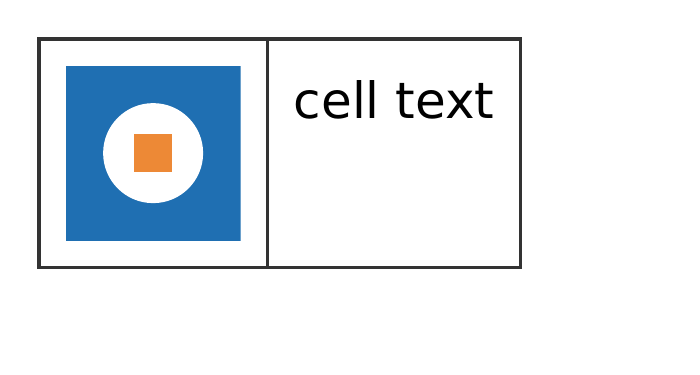
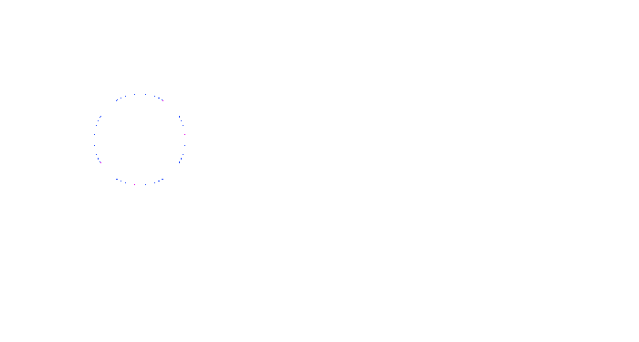
| class | regions | pixels | union bbox (CSS px) | largest px | maximum magnitude |
|---|---|---|---|---|---|
| ColorErr | 32 | 40 | 21,21 → 53,53 | 2 | total 0.04% · largest 0.001777% |
| Missing | 4 | 4 | 23,23 → 53,53 | 1 | total 0.003555% · largest 0.000889% |
| class | bbox (CSS px) | area% | magnitude | reason |
|---|---|---|---|---|
| AntialiasCoverage | 44,22 → 44,22 | 0.001777 | ΔRGB(17,10,5) | antialiasing coverage residue on a shared outline |
| AntialiasCoverage | 51,29 → 51,29 | 0.001777 | ΔRGB(19,12,6) | antialiasing coverage residue on a shared outline |
| AntialiasCoverage | 22,44 → 22,44 | 0.001777 | ΔRGB(17,10,5) | antialiasing coverage residue on a shared outline |
| AntialiasCoverage | 52,44 → 52,44 | 0.001777 | ΔRGB(19,12,6) | antialiasing coverage residue on a shared outline |
| AntialiasCoverage | 51,45 → 51,45 | 0.001777 | ΔRGB(19,12,6) | antialiasing coverage residue on a shared outline |
| AntialiasCoverage | 29,51 → 29,51 | 0.001777 | ΔRGB(19,12,6) | antialiasing coverage residue on a shared outline |
| AntialiasCoverage | 45,51 → 45,51 | 0.001777 | ΔRGB(19,12,6) | antialiasing coverage residue on a shared outline |
| AntialiasCoverage | 44,52 → 44,52 | 0.001777 | ΔRGB(19,12,6) | antialiasing coverage residue on a shared outline |
| Missing | 45,23 → 45,23 | 0.000889 | candidate lacks paint present in reference (0.000889%) | |
| Missing | 53,35 → 53,35 | 0.000889 | candidate lacks paint present in reference (0.000889%) | |
| Missing | 23,45 → 23,45 | 0.000889 | candidate lacks paint present in reference (0.000889%) | |
| Missing | 35,53 → 35,53 | 0.000889 | candidate lacks paint present in reference (0.000889%) | |
| AntialiasCoverage | 35,21 → 35,21 | 0.000889 | ΔRGB(18,12,7) | antialiasing coverage residue on a shared outline |
| AntialiasCoverage | 39,21 → 39,21 | 0.000889 | ΔRGB(15,10,5) | antialiasing coverage residue on a shared outline |
| AntialiasCoverage | 32,22 → 32,22 | 0.000889 | ΔRGB(15,10,5) | antialiasing coverage residue on a shared outline |
| AntialiasCoverage | 42,22 → 42,22 | 0.000889 | ΔRGB(10,7,3) | antialiasing coverage residue on a shared outline |
| AntialiasCoverage | 30,22 → 30,22 | 0.000889 | ΔRGB(31,21,11) | antialiasing coverage residue on a shared outline |
| AntialiasCoverage | 29,23 → 29,23 | 0.000889 | ΔRGB(15,10,5) | antialiasing coverage residue on a shared outline |
| AntialiasCoverage | 45,23 → 45,23 | 0.000889 | ΔRGB(18,12,7) | antialiasing coverage residue on a shared outline |
| AntialiasCoverage | 29,23 → 29,23 | 0.000889 | ΔRGB(19,12,6) | antialiasing coverage residue on a shared outline |
| AntialiasCoverage | 23,29 → 23,29 | 0.000889 | ΔRGB(19,12,6) | antialiasing coverage residue on a shared outline |
| AntialiasCoverage | 23,29 → 23,29 | 0.000889 | ΔRGB(15,10,5) | antialiasing coverage residue on a shared outline |
| AntialiasCoverage | 22,30 → 22,30 | 0.000889 | ΔRGB(31,21,11) | antialiasing coverage residue on a shared outline |
| AntialiasCoverage | 52,30 → 52,30 | 0.000889 | ΔRGB(38,25,13) | antialiasing coverage residue on a shared outline |
| AntialiasCoverage | 22,32 → 22,32 | 0.000889 | ΔRGB(15,10,5) | antialiasing coverage residue on a shared outline |
| AntialiasCoverage | 52,32 → 52,32 | 0.000889 | ΔRGB(19,12,6) | antialiasing coverage residue on a shared outline |
| AntialiasCoverage | 21,35 → 21,35 | 0.000889 | ΔRGB(18,12,7) | antialiasing coverage residue on a shared outline |
| AntialiasCoverage | 21,39 → 21,39 | 0.000889 | ΔRGB(15,10,5) | antialiasing coverage residue on a shared outline |
| AntialiasCoverage | 53,39 → 53,39 | 0.000889 | ΔRGB(19,12,6) | antialiasing coverage residue on a shared outline |
| AntialiasCoverage | 22,42 → 22,42 | 0.000889 | ΔRGB(10,7,3) | antialiasing coverage residue on a shared outline |
| AntialiasCoverage | 52,42 → 52,42 | 0.000889 | ΔRGB(14,9,5) | antialiasing coverage residue on a shared outline |
| AntialiasCoverage | 23,45 → 23,45 | 0.000889 | ΔRGB(18,12,7) | antialiasing coverage residue on a shared outline |
| AntialiasCoverage | 30,52 → 30,52 | 0.000889 | ΔRGB(38,25,13) | antialiasing coverage residue on a shared outline |
| AntialiasCoverage | 32,52 → 32,52 | 0.000889 | ΔRGB(19,12,6) | antialiasing coverage residue on a shared outline |
| AntialiasCoverage | 42,52 → 42,52 | 0.000889 | ΔRGB(14,9,5) | antialiasing coverage residue on a shared outline |
| AntialiasCoverage | 39,53 → 39,53 | 0.000889 | ΔRGB(19,12,6) | antialiasing coverage residue on a shared outline |
1<!DOCTYPE html><html><head><meta charset='utf-8'><style>
2@page{size:224px 120px;margin:0}
3html{font-family:ParitySans;line-height:1.5}
4*{margin:0;box-sizing:border-box}
5body{padding:12px;background:#fff}
6table{border-collapse:collapse}
7td{border:1px solid #333;padding:8px;vertical-align:top}
8img{width:56px;height:56px;display:block}
9</style></head><body>
10<table><tr>
11<td><img src="data:image/svg+xml,%3Csvg xmlns='http://www.w3.org/2000/svg' viewBox='0 0 56 56'%3E%3Crect width='56' height='56' fill='%231f6fb2'/%3E%3Ccircle cx='28' cy='28' r='16' fill='%23fff'/%3E%3Crect x='22' y='22' width='12' height='12' fill='%23ed8936'/%3E%3C/svg%3E"></td>
12<td>cell text</td>
13</tr></table>
14</body></html>
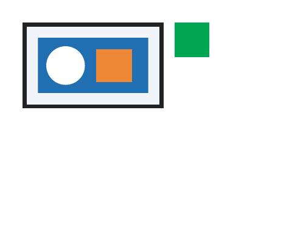
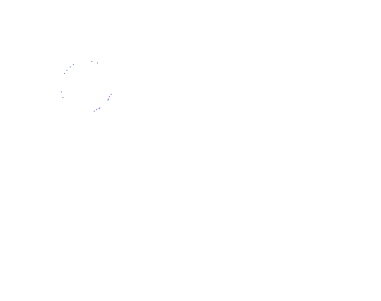
| class | regions | pixels | union bbox (CSS px) | largest px | maximum magnitude |
|---|---|---|---|---|---|
| ColorErr | 14 | 14 | 12,12 → 32,32 | 1 | total 0.03% · largest 0.002310% |
| Missing | 2 | 2 | 27,27 → 32,32 | 1 | total 0.004620% · largest 0.002310% |
| class | bbox (CSS px) | area% | magnitude | reason |
|---|---|---|---|---|
| Missing | 32,27 → 32,27 | 0.002310 | candidate lacks paint present in reference (0.002310%) | |
| Missing | 27,32 → 27,32 | 0.002310 | candidate lacks paint present in reference (0.002310%) | |
| AntialiasCoverage | 25,12 → 25,12 | 0.002310 | ΔRGB(12,8,4) | antialiasing coverage residue on a shared outline |
| AntialiasCoverage | 27,13 → 27,13 | 0.002310 | ΔRGB(3,2,1) | antialiasing coverage residue on a shared outline |
| AntialiasCoverage | 17,14 → 17,14 | 0.002310 | ΔRGB(15,10,5) | antialiasing coverage residue on a shared outline |
| AntialiasCoverage | 16,15 → 16,15 | 0.002310 | ΔRGB(-19,-12,-6) | antialiasing coverage residue on a shared outline |
| AntialiasCoverage | 15,16 → 15,16 | 0.002310 | ΔRGB(-19,-12,-6) | antialiasing coverage residue on a shared outline |
| AntialiasCoverage | 14,17 → 14,17 | 0.002310 | ΔRGB(15,10,5) | antialiasing coverage residue on a shared outline |
| AntialiasCoverage | 12,25 → 12,25 | 0.002310 | ΔRGB(12,8,4) | antialiasing coverage residue on a shared outline |
| AntialiasCoverage | 32,26 → 32,26 | 0.002310 | ΔRGB(9,5,3) | antialiasing coverage residue on a shared outline |
| AntialiasCoverage | 13,27 → 13,27 | 0.002310 | ΔRGB(3,2,1) | antialiasing coverage residue on a shared outline |
| AntialiasCoverage | 31,28 → 31,28 | 0.002310 | ΔRGB(15,10,5) | antialiasing coverage residue on a shared outline |
| AntialiasCoverage | 31,28 → 31,28 | 0.002310 | ΔRGB(19,12,6) | antialiasing coverage residue on a shared outline |
| AntialiasCoverage | 28,31 → 28,31 | 0.002310 | ΔRGB(19,12,6) | antialiasing coverage residue on a shared outline |
| AntialiasCoverage | 28,31 → 28,31 | 0.002310 | ΔRGB(15,10,5) | antialiasing coverage residue on a shared outline |
| AntialiasCoverage | 26,32 → 26,32 | 0.002310 | ΔRGB(9,5,3) | antialiasing coverage residue on a shared outline |
1<!doctype html>
2<html>
3<head>
4<meta charset="utf-8">
5<style>
6@page{size:152px 120px;margin:0}
7html{font-family:ParitySans;line-height:1.5}
8*{margin:0;box-sizing:border-box}
9html,body{background:#fff}
10body{padding:12px}
11.target{display:inline-block;border:2px solid #222;background:#f1f5f9;padding:6px;vertical-align:top}
12img{display:block;width:58px;height:auto}
13.after{display:inline-block;width:18px;height:18px;background:#00a651;margin-left:6px;vertical-align:top}
14</style>
15</head>
16<body>
17<span class="target"><img alt="" src="data:image/svg+xml,%3Csvg xmlns='http://www.w3.org/2000/svg' width='80' height='40' viewBox='0 0 80 40'%3E%3Crect width='80' height='40' fill='%231f6fb2'/%3E%3Ccircle cx='20' cy='20' r='14' fill='%23fff'/%3E%3Crect x='42' y='8' width='26' height='24' fill='%23ed8936'/%3E%3C/svg%3E"></span><span class="after"></span>
18</body>
19</html>
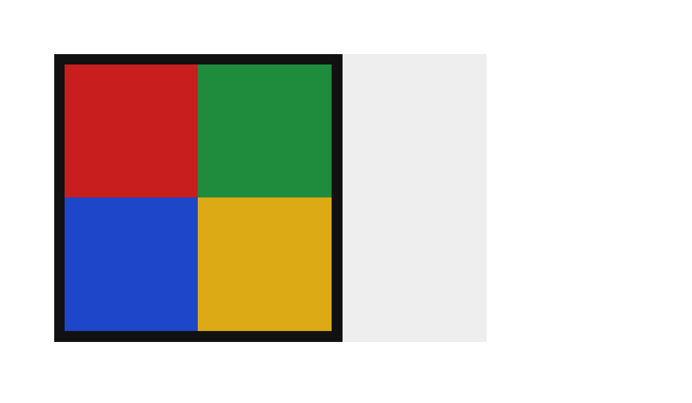


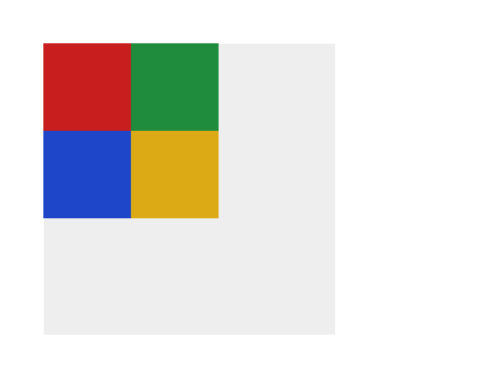

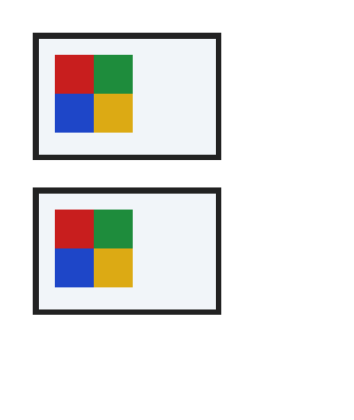


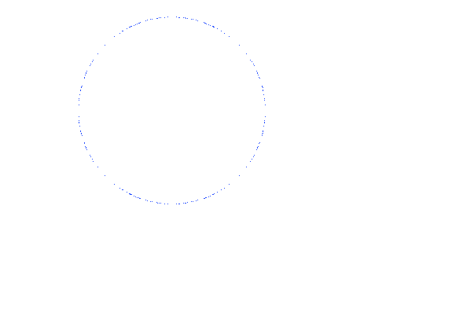
| class | regions | pixels | union bbox (CSS px) | largest px | maximum magnitude |
|---|---|---|---|---|---|
| ColorErr | 150 | 186 | 32,7 → 108,83 | 5 | total 0.2% · largest 0.004072% |
| class | bbox (CSS px) | area% | magnitude | reason |
|---|---|---|---|---|
| AntialiasCoverage | 52,79 → 53,79 | 0.004072 | ΔRGB(-16,7,5) | antialiasing coverage residue on a shared outline |
| AntialiasCoverage | 86,11 → 87,11 | 0.003257 | ΔRGB(-15,8,12) | antialiasing coverage residue on a shared outline |
| AntialiasCoverage | 73,7 → 73,7 | 0.001629 | ΔRGB(-15,7,8) | antialiasing coverage residue on a shared outline |
| AntialiasCoverage | 64,7 → 64,7 | 0.001629 | ΔRGB(-15,6,7) | antialiasing coverage residue on a shared outline |
| AntialiasCoverage | 56,9 → 57,9 | 0.001629 | ΔRGB(-13,6,6) | antialiasing coverage residue on a shared outline |
| AntialiasCoverage | 83,9 → 84,9 | 0.001629 | ΔRGB(-10,6,7) | antialiasing coverage residue on a shared outline |
| AntialiasCoverage | 53,11 → 53,11 | 0.001629 | ΔRGB(-14,6,5) | antialiasing coverage residue on a shared outline |
| AntialiasCoverage | 52,11 → 53,11 | 0.001629 | ΔRGB(-8,12,9) | antialiasing coverage residue on a shared outline |
| AntialiasCoverage | 50,12 → 50,12 | 0.001629 | ΔRGB(-5,6,4) | antialiasing coverage residue on a shared outline |
| AntialiasCoverage | 35,29 → 35,30 | 0.001629 | ΔRGB(-3,5,2) | antialiasing coverage residue on a shared outline |
| AntialiasCoverage | 105,29 → 105,30 | 0.001629 | ΔRGB(-12,5,10) | antialiasing coverage residue on a shared outline |
| AntialiasCoverage | 34,31 → 34,32 | 0.001629 | ΔRGB(-10,7,3) | antialiasing coverage residue on a shared outline |
| AntialiasCoverage | 107,35 → 107,35 | 0.001629 | ΔRGB(-12,6,10) | antialiasing coverage residue on a shared outline |
| AntialiasCoverage | 33,35 → 33,36 | 0.001629 | ΔRGB(-9,6,2) | antialiasing coverage residue on a shared outline |
| AntialiasCoverage | 33,36 → 33,37 | 0.001629 | ΔRGB(-8,5,3) | antialiasing coverage residue on a shared outline |
| AntialiasCoverage | 107,36 → 107,37 | 0.001629 | ΔRGB(-15,7,12) | antialiasing coverage residue on a shared outline |
| AntialiasCoverage | 32,50 → 32,50 | 0.001629 | ΔRGB(-3,4,2) | antialiasing coverage residue on a shared outline |
| AntialiasCoverage | 108,50 → 108,50 | 0.001629 | ΔRGB(-12,5,10) | antialiasing coverage residue on a shared outline |
| AntialiasCoverage | 33,53 → 33,53 | 0.001629 | ΔRGB(-3,4,2) | antialiasing coverage residue on a shared outline |
| AntialiasCoverage | 107,53 → 107,53 | 0.001629 | ΔRGB(-12,6,10) | antialiasing coverage residue on a shared outline |
| AntialiasCoverage | 33,54 → 33,54 | 0.001629 | ΔRGB(-11,6,2) | antialiasing coverage residue on a shared outline |
| AntialiasCoverage | 34,58 → 34,58 | 0.001629 | ΔRGB(-13,7,3) | antialiasing coverage residue on a shared outline |
| AntialiasCoverage | 35,60 → 35,60 | 0.001629 | ΔRGB(-6,6,3) | antialiasing coverage residue on a shared outline |
| AntialiasCoverage | 105,60 → 105,60 | 0.001629 | ΔRGB(-13,7,12) | antialiasing coverage residue on a shared outline |
| AntialiasCoverage | 50,77 → 50,77 | 0.001629 | ΔRGB(-9,7,4) | antialiasing coverage residue on a shared outline |
| AntialiasCoverage | 86,79 → 87,79 | 0.001629 | ΔRGB(-15,11,16) | antialiasing coverage residue on a shared outline |
| AntialiasCoverage | 84,80 → 84,80 | 0.001629 | ΔRGB(-7,5,6) | antialiasing coverage residue on a shared outline |
| AntialiasCoverage | 57,81 → 57,81 | 0.001629 | ΔRGB(-8,5,4) | antialiasing coverage residue on a shared outline |
| AntialiasCoverage | 83,81 → 83,81 | 0.001629 | ΔRGB(-3,4,5) | antialiasing coverage residue on a shared outline |
| AntialiasCoverage | 75,83 → 76,83 | 0.001629 | ΔRGB(-8,3,5) | antialiasing coverage residue on a shared outline |
| AntialiasCoverage | 73,83 → 73,83 | 0.001629 | ΔRGB(-3,3,4) | antialiasing coverage residue on a shared outline |
| AntialiasCoverage | 68,7 → 68,7 | 0.000814 | ΔRGB(-8,3,3) | antialiasing coverage residue on a shared outline |
| AntialiasCoverage | 72,7 → 72,7 | 0.000814 | ΔRGB(-3,1,1) | antialiasing coverage residue on a shared outline |
| AntialiasCoverage | 65,7 → 65,7 | 0.000814 | ΔRGB(-8,3,2) | antialiasing coverage residue on a shared outline |
| AntialiasCoverage | 65,7 → 65,7 | 0.000814 | ΔRGB(-11,4,5) | antialiasing coverage residue on a shared outline |
| AntialiasCoverage | 67,7 → 67,7 | 0.000814 | ΔRGB(-31,12,12) | antialiasing coverage residue on a shared outline |
| AntialiasCoverage | 75,7 → 75,7 | 0.000814 | ΔRGB(-10,3,5) | antialiasing coverage residue on a shared outline |
| AntialiasCoverage | 75,7 → 75,7 | 0.000814 | ΔRGB(-3,1,1) | antialiasing coverage residue on a shared outline |
| AntialiasCoverage | 76,7 → 76,7 | 0.000814 | ΔRGB(-17,7,9) | antialiasing coverage residue on a shared outline |
| AntialiasCoverage | 76,7 → 76,7 | 0.000814 | ΔRGB(-12,6,6) | antialiasing coverage residue on a shared outline |
| AntialiasCoverage | 61,8 → 61,8 | 0.000814 | ΔRGB(-5,2,1) | antialiasing coverage residue on a shared outline |
| AntialiasCoverage | 62,8 → 62,8 | 0.000814 | ΔRGB(-13,6,5) | antialiasing coverage residue on a shared outline |
| AntialiasCoverage | 78,8 → 78,8 | 0.000814 | ΔRGB(-14,5,7) | antialiasing coverage residue on a shared outline |
| AntialiasCoverage | 78,8 → 78,8 | 0.000814 | ΔRGB(-8,4,4) | antialiasing coverage residue on a shared outline |
| AntialiasCoverage | 60,8 → 60,8 | 0.000814 | ΔRGB(-5,2,1) | antialiasing coverage residue on a shared outline |
| AntialiasCoverage | 80,8 → 80,8 | 0.000814 | ΔRGB(-8,4,4) | antialiasing coverage residue on a shared outline |
| AntialiasCoverage | 59,8 → 59,8 | 0.000814 | ΔRGB(-13,6,4) | antialiasing coverage residue on a shared outline |
| AntialiasCoverage | 80,8 → 80,8 | 0.000814 | ΔRGB(-14,5,7) | antialiasing coverage residue on a shared outline |
| AntialiasCoverage | 57,9 → 57,9 | 0.000814 | ΔRGB(-9,4,4) | antialiasing coverage residue on a shared outline |
| AntialiasCoverage | 83,9 → 83,9 | 0.000814 | ΔRGB(-5,2,3) | antialiasing coverage residue on a shared outline |
| AntialiasCoverage | 56,10 → 56,10 | 0.000814 | ΔRGB(-15,7,5) | antialiasing coverage residue on a shared outline |
| AntialiasCoverage | 84,10 → 84,10 | 0.000814 | ΔRGB(-15,6,8) | antialiasing coverage residue on a shared outline |
| AntialiasCoverage | 55,10 → 55,10 | 0.000814 | ΔRGB(-16,6,6) | antialiasing coverage residue on a shared outline |
| AntialiasCoverage | 85,10 → 85,10 | 0.000814 | ΔRGB(-15,6,8) | antialiasing coverage residue on a shared outline |
| AntialiasCoverage | 54,10 → 54,10 | 0.000814 | ΔRGB(-17,8,6) | antialiasing coverage residue on a shared outline |
| AntialiasCoverage | 85,10 → 85,10 | 0.000814 | ΔRGB(-16,6,9) | antialiasing coverage residue on a shared outline |
| AntialiasCoverage | 52,12 → 52,12 | 0.000814 | ΔRGB(-13,5,4) | antialiasing coverage residue on a shared outline |
| AntialiasCoverage | 88,12 → 88,12 | 0.000814 | ΔRGB(-9,4,5) | antialiasing coverage residue on a shared outline |
| AntialiasCoverage | 90,12 → 90,12 | 0.000814 | ΔRGB(-21,8,11) | antialiasing coverage residue on a shared outline |
| AntialiasCoverage | 49,13 → 49,13 | 0.000814 | ΔRGB(-17,8,5) | antialiasing coverage residue on a shared outline |
| AntialiasCoverage | 91,13 → 91,13 | 0.000814 | ΔRGB(-15,6,9) | antialiasing coverage residue on a shared outline |
| AntialiasCoverage | 46,15 → 46,15 | 0.000814 | ΔRGB(-5,2,2) | antialiasing coverage residue on a shared outline |
| AntialiasCoverage | 93,15 → 93,15 | 0.000814 | ΔRGB(-11,5,7) | antialiasing coverage residue on a shared outline |
| AntialiasCoverage | 43,18 → 43,18 | 0.000814 | ΔRGB(-10,4,2) | antialiasing coverage residue on a shared outline |
1<!DOCTYPE html>
2<html lang="en">
3<head>
4<meta charset="utf-8">
5<style>
6 @page { size: 184px 136px; margin: 0; }
7 html { font-family: ParitySans; line-height: 1.5; }
8 * { margin: 0; box-sizing: border-box; }
9 html, body { background: #ffffff; }
10 svg {
11 display: block;
12 width: 140px;
13 height: 90px;
14 background: #c62828;
15 }
16</style>
17</head>
18<body>
19 <svg viewBox="0 0 140 90" xmlns="http://www.w3.org/2000/svg">
20 <defs>
21 <linearGradient id="g" x1="0" x2="1">
22 <stop offset="0" stop-color="#0a7f2e"></stop>
23 <stop offset="1" stop-color="#1565c0"></stop>
24 </linearGradient>
25 <clipPath id="c">
26 <circle cx="70" cy="45" r="38"></circle>
27 </clipPath>
28 </defs>
29 <rect x="10" y="5" width="120" height="80" fill="url(#g)" clip-path="url(#c)"></rect>
30 </svg>
31</body>
32</html>
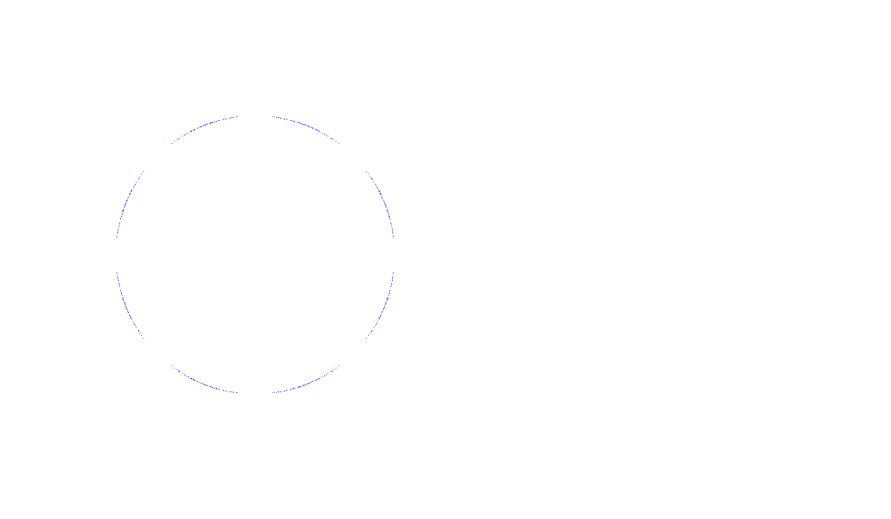
| class | regions | pixels | union bbox (CSS px) | largest px | maximum magnitude |
|---|---|---|---|---|---|
| ColorErr | 268 | 436 | 20,20 → 139,139 | 6 | total 0.1% · largest 0.001600% |
| class | bbox (CSS px) | area% | magnitude | reason |
|---|---|---|---|---|
| AntialiasCoverage | 60,23 → 61,23 | 0.001600 | ΔRGB(-3,-15,-15) | antialiasing coverage residue on a shared outline |
| AntialiasCoverage | 23,60 → 23,61 | 0.001600 | ΔRGB(-3,-15,-15) | antialiasing coverage residue on a shared outline |
| AntialiasCoverage | 137,98 → 137,100 | 0.001600 | ΔRGB(-2,-11,-11) | antialiasing coverage residue on a shared outline |
| AntialiasCoverage | 98,137 → 100,137 | 0.001600 | ΔRGB(-2,-11,-11) | antialiasing coverage residue on a shared outline |
| AntialiasCoverage | 133,53 → 134,54 | 0.001333 | ΔRGB(-4,-17,-17) | antialiasing coverage residue on a shared outline |
| AntialiasCoverage | 53,133 → 54,134 | 0.001333 | ΔRGB(-4,-17,-17) | antialiasing coverage residue on a shared outline |
| AntialiasCoverage | 53,26 → 54,26 | 0.001067 | ΔRGB(-4,-17,-17) | antialiasing coverage residue on a shared outline |
| AntialiasCoverage | 52,26 → 52,27 | 0.001067 | ΔRGB(-2,-12,-12) | antialiasing coverage residue on a shared outline |
| AntialiasCoverage | 26,52 → 27,52 | 0.001067 | ΔRGB(-2,-12,-12) | antialiasing coverage residue on a shared outline |
| AntialiasCoverage | 133,52 → 133,52 | 0.001067 | ΔRGB(-1,-4,-4) | antialiasing coverage residue on a shared outline |
| AntialiasCoverage | 26,53 → 26,54 | 0.001067 | ΔRGB(-4,-17,-17) | antialiasing coverage residue on a shared outline |
| AntialiasCoverage | 52,133 → 52,133 | 0.001067 | ΔRGB(-1,-4,-4) | antialiasing coverage residue on a shared outline |
| AntialiasCoverage | 96,22 → 97,22 | 0.000800 | ΔRGB(-3,-15,-15) | antialiasing coverage residue on a shared outline |
| AntialiasCoverage | 98,23 → 99,23 | 0.000800 | ΔRGB(-3,-17,-17) | antialiasing coverage residue on a shared outline |
| AntialiasCoverage | 58,24 → 59,24 | 0.000800 | ΔRGB(-3,-12,-12) | antialiasing coverage residue on a shared outline |
| AntialiasCoverage | 101,24 → 101,24 | 0.000800 | ΔRGB(-3,-15,-15) | antialiasing coverage residue on a shared outline |
| AntialiasCoverage | 56,24 → 57,25 | 0.000800 | ΔRGB(-3,-12,-12) | antialiasing coverage residue on a shared outline |
| AntialiasCoverage | 104,25 → 105,25 | 0.000800 | ΔRGB(-2,-14,-14) | antialiasing coverage residue on a shared outline |
| AntialiasCoverage | 130,47 → 130,47 | 0.000800 | ΔRGB(-3,-12,-12) | antialiasing coverage residue on a shared outline |
| AntialiasCoverage | 24,56 → 25,57 | 0.000800 | ΔRGB(-3,-12,-12) | antialiasing coverage residue on a shared outline |
| AntialiasCoverage | 24,58 → 24,59 | 0.000800 | ΔRGB(-3,-12,-12) | antialiasing coverage residue on a shared outline |
| AntialiasCoverage | 136,58 → 136,59 | 0.000800 | ΔRGB(-2,-11,-11) | antialiasing coverage residue on a shared outline |
| AntialiasCoverage | 137,60 → 137,61 | 0.000800 | ΔRGB(-3,-17,-17) | antialiasing coverage residue on a shared outline |
| AntialiasCoverage | 137,63 → 138,63 | 0.000800 | ΔRGB(-2,-10,-10) | antialiasing coverage residue on a shared outline |
| AntialiasCoverage | 22,96 → 22,97 | 0.000800 | ΔRGB(-3,-15,-15) | antialiasing coverage residue on a shared outline |
| AntialiasCoverage | 23,98 → 23,99 | 0.000800 | ΔRGB(-3,-17,-17) | antialiasing coverage residue on a shared outline |
| AntialiasCoverage | 136,100 → 136,101 | 0.000800 | ΔRGB(-2,-14,-14) | antialiasing coverage residue on a shared outline |
| AntialiasCoverage | 24,101 → 24,101 | 0.000800 | ΔRGB(-3,-15,-15) | antialiasing coverage residue on a shared outline |
| AntialiasCoverage | 25,104 → 25,105 | 0.000800 | ΔRGB(-2,-14,-14) | antialiasing coverage residue on a shared outline |
| AntialiasCoverage | 47,130 → 47,130 | 0.000800 | ΔRGB(-3,-12,-12) | antialiasing coverage residue on a shared outline |
| AntialiasCoverage | 58,136 → 59,136 | 0.000800 | ΔRGB(-2,-11,-11) | antialiasing coverage residue on a shared outline |
| AntialiasCoverage | 100,136 → 101,136 | 0.000800 | ΔRGB(-2,-14,-14) | antialiasing coverage residue on a shared outline |
| AntialiasCoverage | 60,137 → 61,137 | 0.000800 | ΔRGB(-3,-17,-17) | antialiasing coverage residue on a shared outline |
| AntialiasCoverage | 63,137 → 63,138 | 0.000800 | ΔRGB(-2,-10,-10) | antialiasing coverage residue on a shared outline |
| AntialiasCoverage | 72,20 → 72,20 | 0.000533 | ΔRGB(-2,-8,-8) | antialiasing coverage residue on a shared outline |
| AntialiasCoverage | 70,20 → 70,20 | 0.000533 | ΔRGB(-3,-12,-12) | antialiasing coverage residue on a shared outline |
| AntialiasCoverage | 90,20 → 90,20 | 0.000533 | ΔRGB(-2,-8,-8) | antialiasing coverage residue on a shared outline |
| AntialiasCoverage | 91,21 → 91,21 | 0.000533 | ΔRGB(-3,-15,-15) | antialiasing coverage residue on a shared outline |
| AntialiasCoverage | 92,21 → 92,21 | 0.000533 | ΔRGB(-3,-15,-15) | antialiasing coverage residue on a shared outline |
| AntialiasCoverage | 64,22 → 64,22 | 0.000533 | ΔRGB(-2,-11,-11) | antialiasing coverage residue on a shared outline |
| AntialiasCoverage | 95,22 → 95,22 | 0.000533 | ΔRGB(-3,-12,-12) | antialiasing coverage residue on a shared outline |
| AntialiasCoverage | 63,22 → 63,22 | 0.000533 | ΔRGB(-3,-17,-17) | antialiasing coverage residue on a shared outline |
| AntialiasCoverage | 62,22 → 62,22 | 0.000533 | ΔRGB(-3,-14,-14) | antialiasing coverage residue on a shared outline |
| AntialiasCoverage | 99,23 → 100,23 | 0.000533 | ΔRGB(-3,-12,-12) | antialiasing coverage residue on a shared outline |
| AntialiasCoverage | 59,23 → 59,23 | 0.000533 | ΔRGB(-2,-8,-8) | antialiasing coverage residue on a shared outline |
| AntialiasCoverage | 100,23 → 100,23 | 0.000533 | ΔRGB(-2,-12,-12) | antialiasing coverage residue on a shared outline |
| AntialiasCoverage | 57,24 → 58,24 | 0.000533 | ΔRGB(-2,-10,-10) | antialiasing coverage residue on a shared outline |
| AntialiasCoverage | 102,24 → 102,24 | 0.000533 | ΔRGB(-1,-5,-5) | antialiasing coverage residue on a shared outline |
| AntialiasCoverage | 103,24 → 103,24 | 0.000533 | ΔRGB(-2,-10,-10) | antialiasing coverage residue on a shared outline |
| AntialiasCoverage | 106,26 → 106,26 | 0.000533 | ΔRGB(-3,-15,-15) | antialiasing coverage residue on a shared outline |
| AntialiasCoverage | 106,26 → 107,26 | 0.000533 | ΔRGB(-2,-8,-8) | antialiasing coverage residue on a shared outline |
| AntialiasCoverage | 107,26 → 107,26 | 0.000533 | ΔRGB(-4,-16,-16) | antialiasing coverage residue on a shared outline |
| AntialiasCoverage | 112,29 → 113,29 | 0.000533 | ΔRGB(-2,-10,-10) | antialiasing coverage residue on a shared outline |
| AntialiasCoverage | 132,51 → 132,51 | 0.000533 | ΔRGB(-2,-10,-10) | antialiasing coverage residue on a shared outline |
| AntialiasCoverage | 134,55 → 134,55 | 0.000533 | ΔRGB(-2,-11,-11) | antialiasing coverage residue on a shared outline |
| AntialiasCoverage | 24,57 → 24,58 | 0.000533 | ΔRGB(-2,-10,-10) | antialiasing coverage residue on a shared outline |
| AntialiasCoverage | 136,58 → 136,58 | 0.000533 | ΔRGB(-2,-8,-8) | antialiasing coverage residue on a shared outline |
| AntialiasCoverage | 23,59 → 23,59 | 0.000533 | ΔRGB(-2,-8,-8) | antialiasing coverage residue on a shared outline |
| AntialiasCoverage | 137,61 → 137,61 | 0.000533 | ΔRGB(-2,-8,-8) | antialiasing coverage residue on a shared outline |
| AntialiasCoverage | 22,62 → 22,62 | 0.000533 | ΔRGB(-3,-14,-14) | antialiasing coverage residue on a shared outline |
| AntialiasCoverage | 137,62 → 137,62 | 0.000533 | ΔRGB(-1,-5,-5) | antialiasing coverage residue on a shared outline |
| AntialiasCoverage | 22,63 → 22,63 | 0.000533 | ΔRGB(-3,-17,-17) | antialiasing coverage residue on a shared outline |
| AntialiasCoverage | 22,64 → 22,64 | 0.000533 | ΔRGB(-2,-11,-11) | antialiasing coverage residue on a shared outline |
| AntialiasCoverage | 138,66 → 138,66 | 0.000533 | ΔRGB(-2,-11,-11) | antialiasing coverage residue on a shared outline |
1<!DOCTYPE html>
2<html lang="en">
3<head>
4<meta charset="utf-8">
5<title>inline svg clip-path</title>
6<style>
7 @page { size: 384px 224px; margin: 0; }
8 html { font-family: ParitySans; line-height: 1.5; }
9 * { margin: 0; box-sizing: border-box; }
10 html, body { background: #ffffff; }
11 .stage {
12 width: 240px;
13 margin: 30px;
14 background: #eeeeee;
15 }
16 svg { display: block; }
17</style>
18</head>
19<body>
20 <div class="stage">
21 <svg width="160" height="160" viewBox="0 0 160 160" xmlns="http://www.w3.org/2000/svg">
22 <defs>
23 <clipPath id="c">
24 <circle cx="80" cy="80" r="60"></circle>
25 </clipPath>
26 </defs>
27 <rect x="0" y="0" width="160" height="160" fill="#c62828" clip-path="url(#c)"></rect>
28 </svg>
29 </div>
30</body>
31</html>
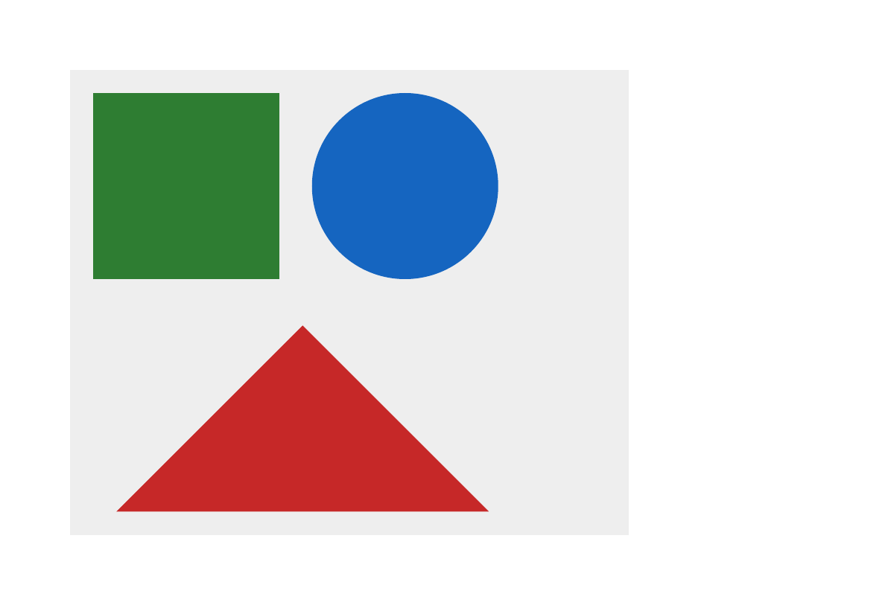
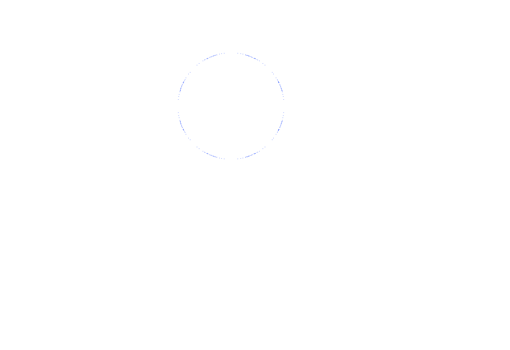
| class | regions | pixels | union bbox (CSS px) | largest px | maximum magnitude |
|---|---|---|---|---|---|
| ColorErr | 146 | 206 | 104,10 → 183,90 | 6 | total 0.04% · largest 0.001280% |
| class | bbox (CSS px) | area% | magnitude | reason |
|---|---|---|---|---|
| AntialiasCoverage | 179,31 → 180,32 | 0.001280 | ΔRGB(-14,-9,-3) | antialiasing coverage residue on a shared outline |
| AntialiasCoverage | 179,67 → 180,68 | 0.001280 | ΔRGB(-14,-9,-3) | antialiasing coverage residue on a shared outline |
| AntialiasCoverage | 156,12 → 156,12 | 0.000640 | ΔRGB(-12,-7,-2) | antialiasing coverage residue on a shared outline |
| AntialiasCoverage | 157,12 → 157,12 | 0.000640 | ΔRGB(-12,-7,-2) | antialiasing coverage residue on a shared outline |
| AntialiasCoverage | 161,14 → 162,14 | 0.000640 | ΔRGB(-20,-12,-4) | antialiasing coverage residue on a shared outline |
| AntialiasCoverage | 108,32 → 108,32 | 0.000640 | ΔRGB(-19,-12,-4) | antialiasing coverage residue on a shared outline |
| AntialiasCoverage | 106,36 → 106,37 | 0.000640 | ΔRGB(-12,-7,-2) | antialiasing coverage residue on a shared outline |
| AntialiasCoverage | 106,37 → 106,38 | 0.000640 | ΔRGB(-16,-10,-4) | antialiasing coverage residue on a shared outline |
| AntialiasCoverage | 182,38 → 182,38 | 0.000640 | ΔRGB(-14,-9,-3) | antialiasing coverage residue on a shared outline |
| AntialiasCoverage | 182,61 → 182,62 | 0.000640 | ΔRGB(-14,-9,-3) | antialiasing coverage residue on a shared outline |
| AntialiasCoverage | 106,61 → 106,62 | 0.000640 | ΔRGB(-16,-10,-4) | antialiasing coverage residue on a shared outline |
| AntialiasCoverage | 106,63 → 106,63 | 0.000640 | ΔRGB(-12,-7,-2) | antialiasing coverage residue on a shared outline |
| AntialiasCoverage | 108,67 → 108,68 | 0.000640 | ΔRGB(-19,-12,-4) | antialiasing coverage residue on a shared outline |
| AntialiasCoverage | 161,86 → 162,86 | 0.000640 | ΔRGB(-20,-12,-4) | antialiasing coverage residue on a shared outline |
| AntialiasCoverage | 157,87 → 157,88 | 0.000640 | ΔRGB(-12,-7,-2) | antialiasing coverage residue on a shared outline |
| AntialiasCoverage | 156,88 → 156,88 | 0.000640 | ΔRGB(-12,-7,-2) | antialiasing coverage residue on a shared outline |
| AntialiasCoverage | 155,11 → 155,11 | 0.000427 | ΔRGB(-10,-6,-2) | antialiasing coverage residue on a shared outline |
| AntialiasCoverage | 132,12 → 132,12 | 0.000427 | ΔRGB(-8,-6,-2) | antialiasing coverage residue on a shared outline |
| AntialiasCoverage | 131,12 → 131,12 | 0.000427 | ΔRGB(-8,-6,-2) | antialiasing coverage residue on a shared outline |
| AntialiasCoverage | 159,13 → 159,13 | 0.000427 | ΔRGB(-11,-7,-3) | antialiasing coverage residue on a shared outline |
| AntialiasCoverage | 126,14 → 126,14 | 0.000427 | ΔRGB(-23,-14,-5) | antialiasing coverage residue on a shared outline |
| AntialiasCoverage | 125,14 → 126,14 | 0.000427 | ΔRGB(-18,-12,-4) | antialiasing coverage residue on a shared outline |
| AntialiasCoverage | 162,14 → 162,14 | 0.000427 | ΔRGB(-6,-3,-1) | antialiasing coverage residue on a shared outline |
| AntialiasCoverage | 108,31 → 108,32 | 0.000427 | ΔRGB(-19,-12,-4) | antialiasing coverage residue on a shared outline |
| AntialiasCoverage | 180,34 → 180,34 | 0.000427 | ΔRGB(-11,-7,-3) | antialiasing coverage residue on a shared outline |
| AntialiasCoverage | 107,35 → 107,35 | 0.000427 | ΔRGB(-6,-3,-1) | antialiasing coverage residue on a shared outline |
| AntialiasCoverage | 181,36 → 181,36 | 0.000427 | ΔRGB(-14,-9,-3) | antialiasing coverage residue on a shared outline |
| AntialiasCoverage | 181,63 → 181,63 | 0.000427 | ΔRGB(-14,-9,-3) | antialiasing coverage residue on a shared outline |
| AntialiasCoverage | 107,65 → 107,65 | 0.000427 | ΔRGB(-6,-3,-1) | antialiasing coverage residue on a shared outline |
| AntialiasCoverage | 180,66 → 180,66 | 0.000427 | ΔRGB(-11,-7,-3) | antialiasing coverage residue on a shared outline |
| AntialiasCoverage | 108,68 → 108,68 | 0.000427 | ΔRGB(-19,-12,-4) | antialiasing coverage residue on a shared outline |
| AntialiasCoverage | 125,85 → 126,85 | 0.000427 | ΔRGB(-18,-12,-4) | antialiasing coverage residue on a shared outline |
| AntialiasCoverage | 162,85 → 162,85 | 0.000427 | ΔRGB(-6,-3,-1) | antialiasing coverage residue on a shared outline |
| AntialiasCoverage | 126,86 → 126,86 | 0.000427 | ΔRGB(-23,-14,-5) | antialiasing coverage residue on a shared outline |
| AntialiasCoverage | 159,87 → 159,87 | 0.000427 | ΔRGB(-11,-7,-3) | antialiasing coverage residue on a shared outline |
| AntialiasCoverage | 131,88 → 131,88 | 0.000427 | ΔRGB(-8,-6,-2) | antialiasing coverage residue on a shared outline |
| AntialiasCoverage | 132,88 → 132,88 | 0.000427 | ΔRGB(-8,-6,-2) | antialiasing coverage residue on a shared outline |
| AntialiasCoverage | 155,88 → 155,88 | 0.000427 | ΔRGB(-10,-6,-2) | antialiasing coverage residue on a shared outline |
| AntialiasCoverage | 139,10 → 139,10 | 0.000213 | ΔRGB(-4,-3,-1) | antialiasing coverage residue on a shared outline |
| AntialiasCoverage | 149,10 → 149,10 | 0.000213 | ΔRGB(-8,-6,-2) | antialiasing coverage residue on a shared outline |
| AntialiasCoverage | 137,10 → 137,10 | 0.000213 | ΔRGB(-8,-6,-2) | antialiasing coverage residue on a shared outline |
| AntialiasCoverage | 151,10 → 151,10 | 0.000213 | ΔRGB(-4,-3,-1) | antialiasing coverage residue on a shared outline |
| AntialiasCoverage | 135,11 → 135,11 | 0.000213 | ΔRGB(-8,-6,-2) | antialiasing coverage residue on a shared outline |
| AntialiasCoverage | 153,11 → 153,11 | 0.000213 | ΔRGB(-4,-3,-1) | antialiasing coverage residue on a shared outline |
| AntialiasCoverage | 132,11 → 132,11 | 0.000213 | ΔRGB(-6,-3,-1) | antialiasing coverage residue on a shared outline |
| AntialiasCoverage | 133,11 → 133,11 | 0.000213 | ΔRGB(-16,-10,-4) | antialiasing coverage residue on a shared outline |
| AntialiasCoverage | 130,12 → 130,12 | 0.000213 | ΔRGB(-6,-3,-1) | antialiasing coverage residue on a shared outline |
| AntialiasCoverage | 130,12 → 130,12 | 0.000213 | ΔRGB(-18,-12,-4) | antialiasing coverage residue on a shared outline |
| AntialiasCoverage | 158,12 → 158,12 | 0.000213 | ΔRGB(-11,-7,-3) | antialiasing coverage residue on a shared outline |
| AntialiasCoverage | 129,12 → 129,12 | 0.000213 | ΔRGB(-12,-7,-2) | antialiasing coverage residue on a shared outline |
| AntialiasCoverage | 158,12 → 158,12 | 0.000213 | ΔRGB(-15,-10,-3) | antialiasing coverage residue on a shared outline |
| AntialiasCoverage | 128,13 → 128,13 | 0.000213 | ΔRGB(-6,-3,-1) | antialiasing coverage residue on a shared outline |
| AntialiasCoverage | 129,13 → 129,13 | 0.000213 | ΔRGB(-19,-12,-4) | antialiasing coverage residue on a shared outline |
| AntialiasCoverage | 127,13 → 127,13 | 0.000213 | ΔRGB(-10,-6,-2) | antialiasing coverage residue on a shared outline |
| AntialiasCoverage | 160,13 → 160,13 | 0.000213 | ΔRGB(-12,-8,-3) | antialiasing coverage residue on a shared outline |
| AntialiasCoverage | 124,15 → 124,15 | 0.000213 | ΔRGB(-8,-6,-2) | antialiasing coverage residue on a shared outline |
| AntialiasCoverage | 163,15 → 163,15 | 0.000213 | ΔRGB(-14,-9,-3) | antialiasing coverage residue on a shared outline |
| AntialiasCoverage | 124,15 → 124,15 | 0.000213 | ΔRGB(-16,-9,-3) | antialiasing coverage residue on a shared outline |
| AntialiasCoverage | 164,15 → 164,15 | 0.000213 | ΔRGB(-11,-7,-3) | antialiasing coverage residue on a shared outline |
| AntialiasCoverage | 123,16 → 123,16 | 0.000213 | ΔRGB(-10,-6,-2) | antialiasing coverage residue on a shared outline |
| AntialiasCoverage | 165,16 → 165,16 | 0.000213 | ΔRGB(-4,-3,-1) | antialiasing coverage residue on a shared outline |
| AntialiasCoverage | 120,18 → 120,18 | 0.000213 | ΔRGB(-6,-3,-1) | antialiasing coverage residue on a shared outline |
| AntialiasCoverage | 168,18 → 168,18 | 0.000213 | ΔRGB(-12,-8,-3) | antialiasing coverage residue on a shared outline |
| AntialiasCoverage | 118,19 → 118,19 | 0.000213 | ΔRGB(-8,-6,-2) | antialiasing coverage residue on a shared outline |
1<!DOCTYPE html>
2<html lang="en">
3<head>
4<meta charset="utf-8">
5<title>inline svg shapes</title>
6<style>
7 @page { size: 384px 264px; margin: 0; }
8 html { font-family: ParitySans; line-height: 1.5; }
9 * { margin: 0; box-sizing: border-box; }
10 html, body { background: #ffffff; }
11 .stage {
12 width: 240px;
13 margin: 30px;
14 background: #eeeeee;
15 }
16 svg { display: block; }
17</style>
18</head>
19<body>
20 <div class="stage">
21 <svg width="200" height="200" viewBox="0 0 100 100" xmlns="http://www.w3.org/2000/svg">
22 <rect x="5" y="5" width="40" height="40" fill="#2e7d32"></rect>
23 <circle cx="72" cy="25" r="20" fill="#1565c0"></circle>
24 <path d="M10 95 L50 55 L90 95 Z" fill="#c62828"></path>
25 </svg>
26 </div>
27</body>
28</html>

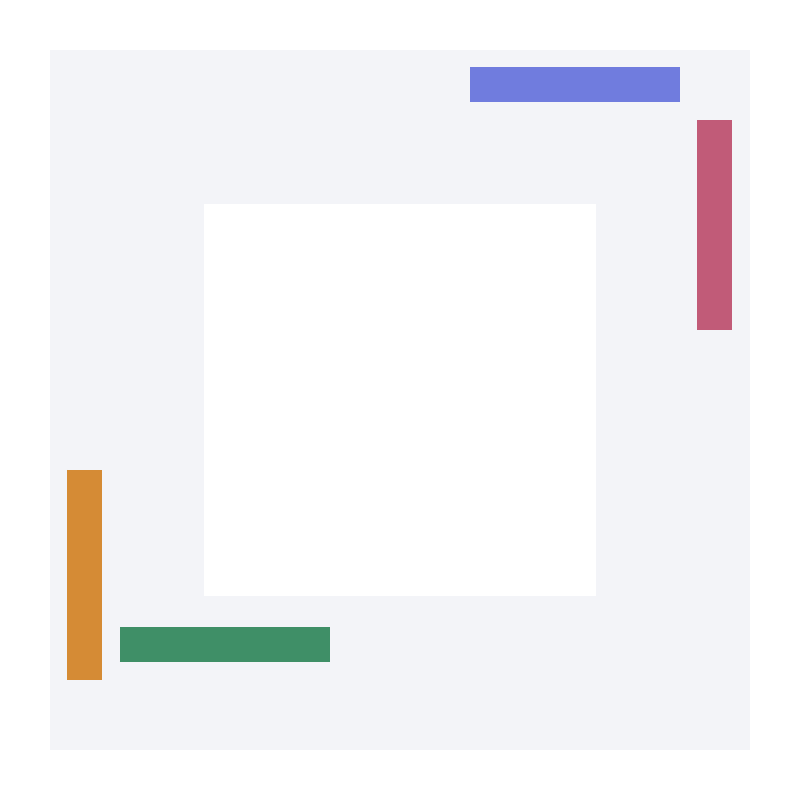


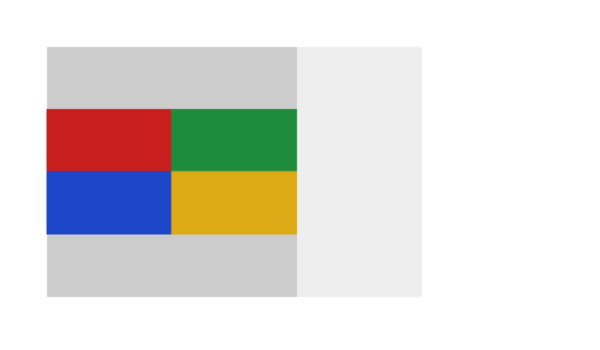
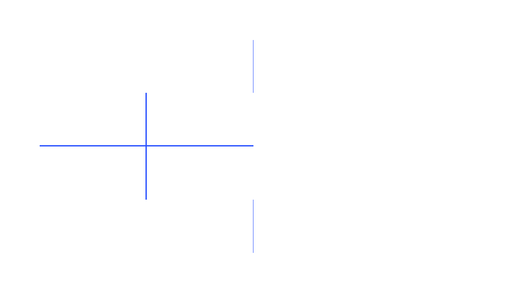
| class | regions | pixels | union bbox (CSS px) | largest px | maximum magnitude |
|---|---|---|---|---|---|
| ColorErr | 3 | 2496 | 0,0 → 160,160 | 2247 | total 0.7% · largest 0.6% |
| class | bbox (CSS px) | area% | magnitude | reason |
|---|---|---|---|---|
| AntialiasCoverage | 0,40 → 160,120 | 0.6 | ΔRGB(15,8,-3) | antialiasing coverage residue on a shared outline |
| AntialiasCoverage | 160,120 → 160,160 | 0.03 | ΔRGB(-11,-11,-11) | antialiasing coverage residue on a shared outline |
| AntialiasCoverage | 160,0 → 160,39 | 0.03 | ΔRGB(-11,-11,-11) | antialiasing coverage residue on a shared outline |
1<!DOCTYPE html>
2<html lang="en">
3<head>
4<meta charset="utf-8">
5<title>img object-fit scale-down (contain wins)</title>
6<style>
7 @page { size: 384px 224px; margin: 0; }
8 html { font-family: ParitySans; line-height: 1.5; }
9 * { margin: 0; box-sizing: border-box; }
10 html, body { background: #ffffff; }
11 .stage { width: 240px; margin: 30px; background: #eeeeee; }
12 /* 240x120 (2:1) image larger than the 160x160 box: scale-down behaves like
13 contain, shrinking it to 160x80 centred (grey bands top and bottom). */
14 img {
15 display: block; width: 160px; height: 160px; background: #cccccc;
16 object-fit: scale-down; image-rendering: pixelated;
17 }
18</style>
19</head>
20<body>
21 <div class="stage">
22 <img alt="" width="160" height="160" src="">
23 </div>
24</body>
25</html>


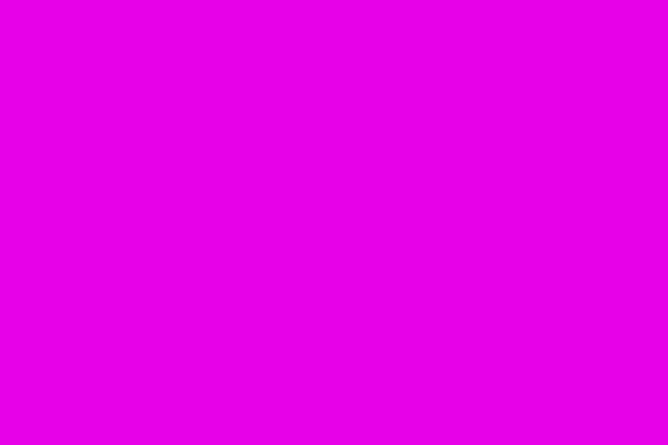
| class | regions | pixels | union bbox (CSS px) | largest px | maximum magnitude |
|---|---|---|---|---|---|
| ColorErr | 1 | 500 | 160,0 → 160,160 | 500 | total 0.1% · largest 0.1% |
| class | bbox (CSS px) | area% | magnitude | reason |
|---|---|---|---|---|
| AntialiasCoverage | 160,0 → 160,160 | 0.1 | ΔRGB(-11,-11,-11) | antialiasing coverage residue on a shared outline |
1<!DOCTYPE html>
2<html lang="en">
3<head>
4<meta charset="utf-8">
5<title>img object-fit none</title>
6<style>
7 @page { size: 384px 224px; margin: 0; }
8 html { font-family: ParitySans; line-height: 1.5; }
9 * { margin: 0; box-sizing: border-box; }
10 html, body { background: #ffffff; }
11 .stage {
12 width: 240px;
13 margin: 30px;
14 background: #eeeeee;
15 }
16 /* object-fit none renders the image at intrinsic 8x4 px, centred in the 160x160 box. */
17 img {
18 display: block;
19 width: 160px;
20 height: 160px;
21 background: #cccccc;
22 object-fit: none;
23 image-rendering: pixelated;
24 }
25</style>
26</head>
27<body>
28 <div class="stage">
29 <img alt="" width="160" height="160" src="data:image/png;base64,iVBORw0KGgoAAAANSUhEUgAAAAgAAAAECAIAAAA8r+mnAAAAIElEQVR42mM4IScHR3I9NnDEgFNCzu0EHN1ZJQJHOCUAni4lgeO2HLIAAAAASUVORK5CYII=">
30 </div>
31</body>
32</html>
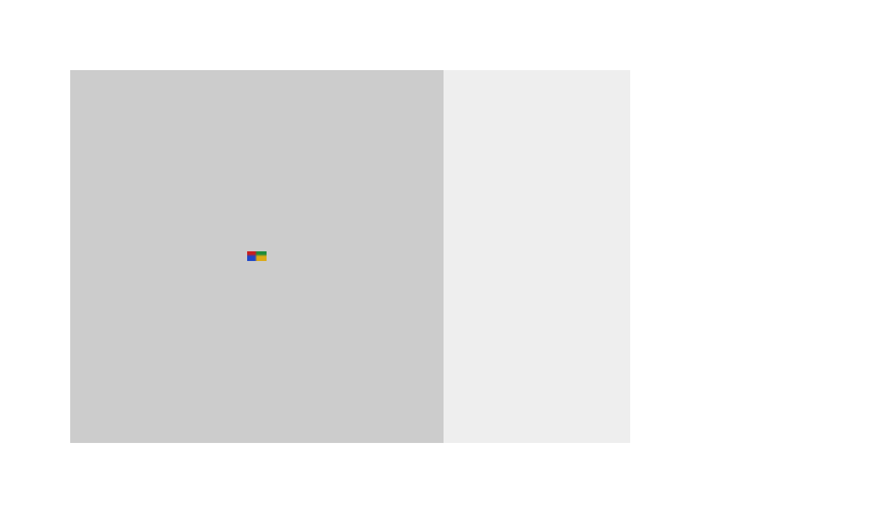
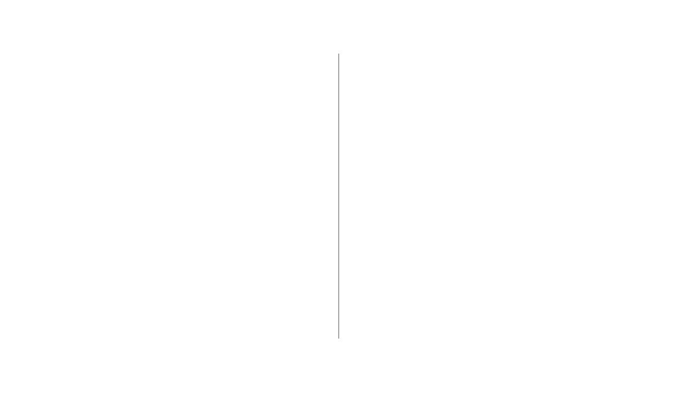
| class | regions | pixels | union bbox (CSS px) | largest px | maximum magnitude |
|---|---|---|---|---|---|
| ColorErr | 1 | 500 | 160,0 → 160,160 | 500 | total 0.1% · largest 0.1% |
| class | bbox (CSS px) | area% | magnitude | reason |
|---|---|---|---|---|
| AntialiasCoverage | 160,0 → 160,160 | 0.1 | ΔRGB(-11,-11,-11) | antialiasing coverage residue on a shared outline |
1<!DOCTYPE html>
2<html lang="en">
3<head>
4<meta charset="utf-8">
5<title>img object-fit scale-down (none wins)</title>
6<style>
7 @page { size: 384px 224px; margin: 0; }
8 html { font-family: ParitySans; line-height: 1.5; }
9 * { margin: 0; box-sizing: border-box; }
10 html, body { background: #ffffff; }
11 .stage { width: 240px; margin: 30px; background: #eeeeee; }
12 /* 8x4 (2:1) image far smaller than the 160x160 box: scale-down picks the
13 smaller of none and contain, so it renders at intrinsic 8x4 px centred. */
14 img {
15 display: block; width: 160px; height: 160px; background: #cccccc;
16 object-fit: scale-down; image-rendering: pixelated;
17 }
18</style>
19</head>
20<body>
21 <div class="stage">
22 <img alt="" width="160" height="160" src="data:image/png;base64,iVBORw0KGgoAAAANSUhEUgAAAAgAAAAECAIAAAA8r+mnAAAAIElEQVR42mM4IScHR3I9NnDEgFNCzu0EHN1ZJQJHOCUAni4lgeO2HLIAAAAASUVORK5CYII=">
23 </div>
24</body>
25</html>
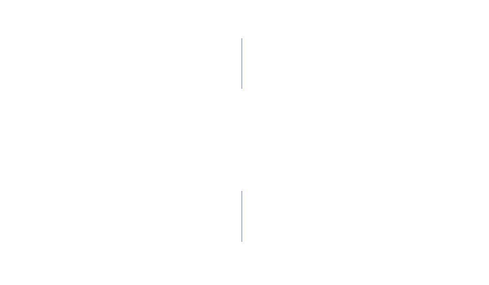
| class | regions | pixels | union bbox (CSS px) | largest px | maximum magnitude |
|---|---|---|---|---|---|
| ColorErr | 2 | 249 | 160,0 → 160,160 | 125 | total 0.07% · largest 0.03% |
| class | bbox (CSS px) | area% | magnitude | reason |
|---|---|---|---|---|
| AntialiasCoverage | 160,120 → 160,160 | 0.03 | ΔRGB(-11,-11,-11) | antialiasing coverage residue on a shared outline |
| AntialiasCoverage | 160,0 → 160,39 | 0.03 | ΔRGB(-11,-11,-11) | antialiasing coverage residue on a shared outline |
1<!DOCTYPE html>
2<html lang="en">
3<head>
4<meta charset="utf-8">
5<title>img object-fit contain</title>
6<style>
7 @page { size: 384px 224px; margin: 0; }
8 html { font-family: ParitySans; line-height: 1.5; }
9 * { margin: 0; box-sizing: border-box; }
10 html, body { background: #ffffff; }
11 .stage {
12 width: 240px;
13 margin: 30px;
14 background: #eeeeee;
15 }
16 /* 2:1 image in a 160x160 box; contain letterboxes it to 160x80, centred vertically. */
17 img {
18 display: block;
19 width: 160px;
20 height: 160px;
21 background: #cccccc;
22 object-fit: contain;
23 image-rendering: pixelated;
24 }
25</style>
26</head>
27<body>
28 <div class="stage">
29 <img alt="" width="160" height="160" src="data:image/png;base64,iVBORw0KGgoAAAANSUhEUgAAAAgAAAAECAIAAAA8r+mnAAAAIElEQVR42mM4IScHR3I9NnDEgFNCzu0EHN1ZJQJHOCUAni4lgeO2HLIAAAAASUVORK5CYII=">
30 </div>
31</body>
32</html>


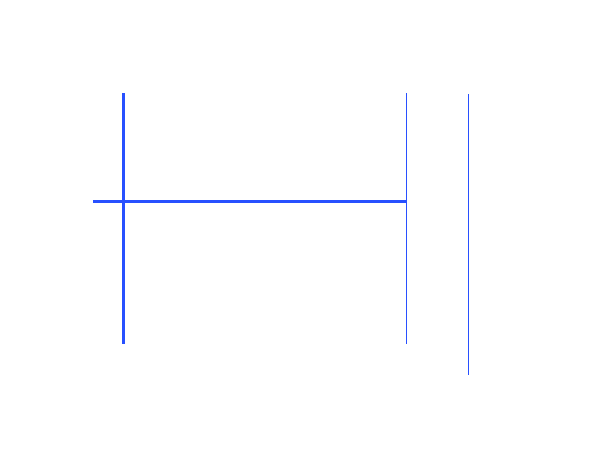
| class | regions | pixels | union bbox (CSS px) | largest px | maximum magnitude |
|---|---|---|---|---|---|
| ColorErr | 2 | 2711 | 0,0 → 120,90 | 2430 | total 2.6% · largest 2.3% · max ΔE 2.9 |
| class | bbox (CSS px) | area% | magnitude | reason |
|---|---|---|---|---|
| ColorValue | 0,0 → 100,80 | 2.3 | ΔRGB(8,1,-2) | fill recolour ΔRGB(+8,+1,-2) (ΔE 0) |
| AntialiasCoverage | 120,0 → 120,90 | 0.3 | ΔE 2.9 ΔRGB(-13,-13,-13) | antialiasing coverage residue on a shared outline |
1<!DOCTYPE html>
2<html lang="en">
3<head>
4<meta charset="utf-8">
5<style>
6 @page { size: 192px 152px; margin: 0; }
7 html { font-family: ParitySans; line-height: 1.5; }
8 * { margin: 0; box-sizing: border-box; }
9 html, body { background: #ffffff; }
10 body { padding: 30px; }
11 .photo {
12 display: block;
13 width: 120px;
14 height: 90px;
15 background: #d9d9d9;
16 object-fit: cover;
17 object-position: right 20px bottom 10px;
18 image-rendering: pixelated;
19 }
20</style>
21</head>
22<body>
23 <img class="photo" alt="" src="data:image/png;base64,iVBORw0KGgoAAAANSUhEUgAAAAgAAAAECAIAAAA8r+mnAAAAIElEQVR42mM4IScHR3I9NnDEgFNCzu0EHN1ZJQJHOCUAni4lgeO2HLIAAAAASUVORK5CYII=">
24</body>
25</html>
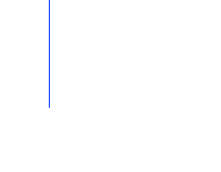
| class | regions | pixels | union bbox (CSS px) | largest px | maximum magnitude |
|---|---|---|---|---|---|
| ColorErr | 1 | 657 | 32,0 → 32,70 | 657 | total 1.1% · largest 1.1% |
| class | bbox (CSS px) | area% | magnitude | reason |
|---|---|---|---|---|
| AntialiasCoverage | 32,0 → 32,70 | 1.1 | ΔRGB(-99,45,3) | antialiasing coverage residue on a shared outline |
1<!DOCTYPE html>
2<html lang="en">
3<head>
4<meta charset="utf-8">
5<style>
6 @page { size: 144px 112px; margin: 0; }
7 html { font-family: ParitySans; line-height: 1.5; }
8 * { margin: 0; box-sizing: border-box; }
9 html, body { background: #ffffff; }
10 .slot {
11 width: 90px;
12 height: 70px;
13 overflow: hidden;
14 background: #c62828;
15 }
16 .slot img {
17 display: block;
18 width: 90px;
19 height: 70px;
20 object-fit: cover;
21 object-position: right 25% bottom 25%;
22 image-rendering: pixelated;
23 }
24</style>
25</head>
26<body>
27 <div class="slot">
28 <img alt="" src="data:image/png;base64,iVBORw0KGgoAAAANSUhEUgAAAAgAAAAECAIAAAA8r+mnAAAAFUlEQVR42mM4pqEBR1z1enDEQD0JAMyPHNFwKtUxAAAAAElFTkSuQmCC">
29 </div>
30</body>
31</html>
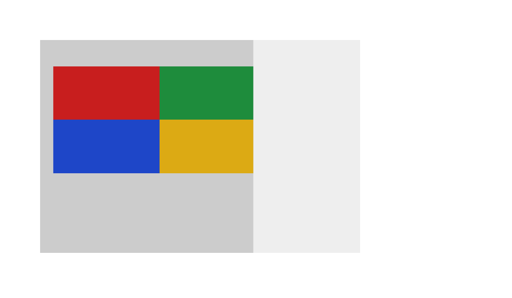
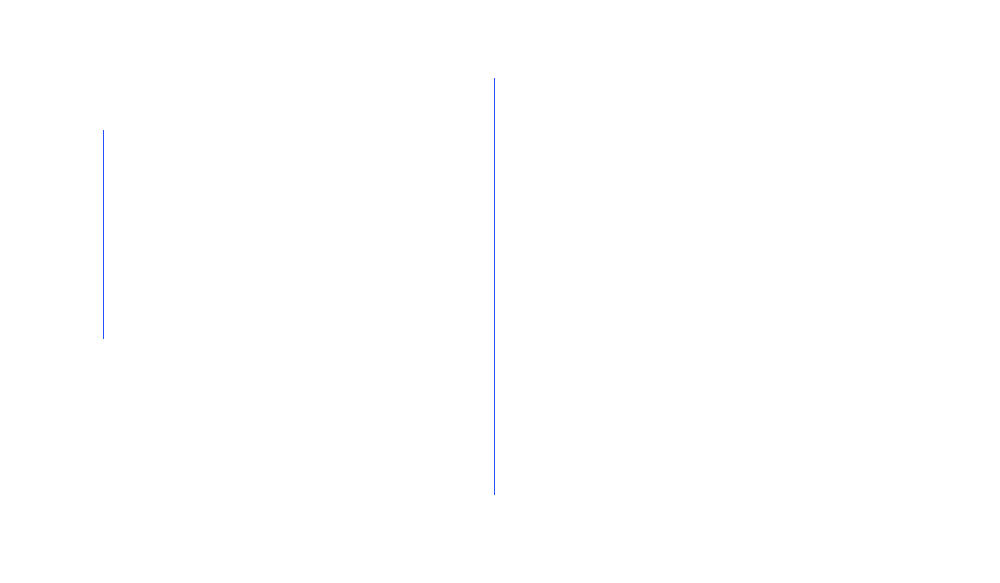
| class | regions | pixels | union bbox (CSS px) | largest px | maximum magnitude |
|---|---|---|---|---|---|
| ColorErr | 2 | 751 | 10,0 → 160,160 | 500 | total 0.2% · largest 0.1% |
| class | bbox (CSS px) | area% | magnitude | reason |
|---|---|---|---|---|
| AntialiasCoverage | 160,0 → 160,160 | 0.1 | ΔRGB(-4,-4,-4) | antialiasing coverage residue on a shared outline |
| AntialiasCoverage | 10,20 → 10,100 | 0.07 | ΔRGB(-152,-117,-3) | antialiasing coverage residue on a shared outline |
1<!DOCTYPE html>
2<html lang="en">
3<head>
4<meta charset="utf-8">
5<title>img object-position length</title>
6<style>
7 @page { size: 384px 224px; margin: 0; }
8 html { font-family: ParitySans; line-height: 1.5; }
9 * { margin: 0; box-sizing: border-box; }
10 html, body { background: #ffffff; }
11 .stage { width: 240px; margin: 30px; background: #eeeeee; }
12 /* contain letterboxes the 2:1 image to 160x80; object-position 10px 20px
13 offsets it 10px from the left edge and 20px from the top of the box. */
14 img {
15 display: block; width: 160px; height: 160px; background: #cccccc;
16 object-fit: contain; object-position: 10px 20px; image-rendering: pixelated;
17 }
18</style>
19</head>
20<body>
21 <div class="stage">
22 <img alt="" width="160" height="160" src="data:image/png;base64,iVBORw0KGgoAAAANSUhEUgAAAAgAAAAECAIAAAA8r+mnAAAAIElEQVR42mM4IScHR3I9NnDEgFNCzu0EHN1ZJQJHOCUAni4lgeO2HLIAAAAASUVORK5CYII=">
23 </div>
24</body>
25</html>
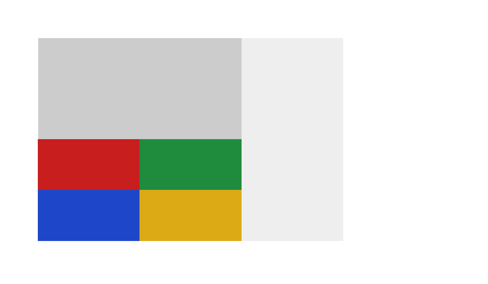
| class | regions | pixels | union bbox (CSS px) | largest px | maximum magnitude |
|---|---|---|---|---|---|
| ColorErr | 1 | 249 | 160,0 → 160,79 | 249 | total 0.07% · largest 0.07% |
| class | bbox (CSS px) | area% | magnitude | reason |
|---|---|---|---|---|
| AntialiasCoverage | 160,0 → 160,79 | 0.07 | ΔRGB(-11,-11,-11) | antialiasing coverage residue on a shared outline |
1<!DOCTYPE html>
2<html lang="en">
3<head>
4<meta charset="utf-8">
5<title>img object-position with contain</title>
6<style>
7 @page { size: 384px 224px; margin: 0; }
8 html { font-family: ParitySans; line-height: 1.5; }
9 * { margin: 0; box-sizing: border-box; }
10 html, body { background: #ffffff; }
11 .stage {
12 width: 240px;
13 margin: 30px;
14 background: #eeeeee;
15 }
16 /* contain letterboxes the 2:1 image to 160x80; object-position bottom anchors it to the box bottom. */
17 img {
18 display: block;
19 width: 160px;
20 height: 160px;
21 background: #cccccc;
22 object-fit: contain;
23 object-position: bottom;
24 image-rendering: pixelated;
25 }
26</style>
27</head>
28<body>
29 <div class="stage">
30 <img alt="" width="160" height="160" src="data:image/png;base64,iVBORw0KGgoAAAANSUhEUgAAAAgAAAAECAIAAAA8r+mnAAAAIElEQVR42mM4IScHR3I9NnDEgFNCzu0EHN1ZJQJHOCUAni4lgeO2HLIAAAAASUVORK5CYII=">
31 </div>
32</body>
33</html>
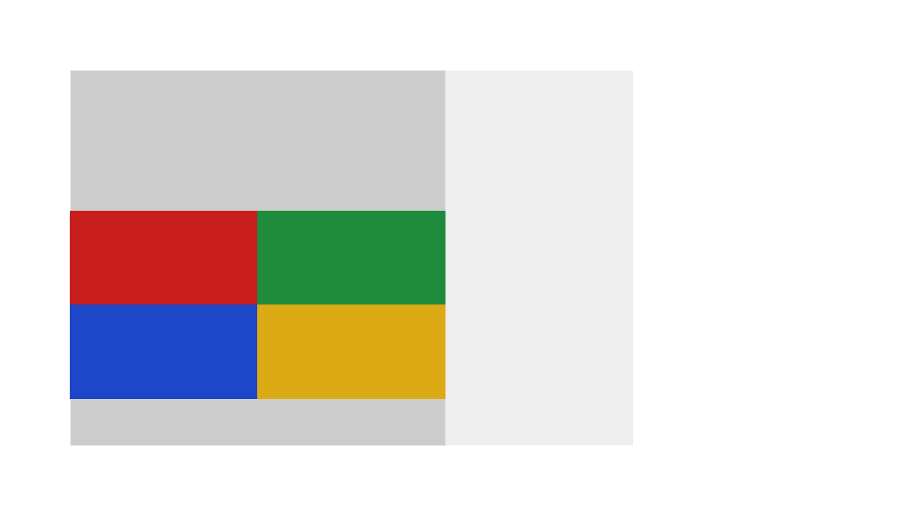
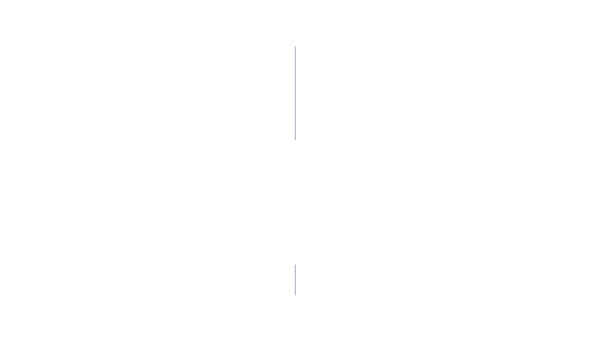
| class | regions | pixels | union bbox (CSS px) | largest px | maximum magnitude |
|---|---|---|---|---|---|
| ColorErr | 2 | 249 | 160,0 → 160,160 | 187 | total 0.07% · largest 0.05% |
| class | bbox (CSS px) | area% | magnitude | reason |
|---|---|---|---|---|
| AntialiasCoverage | 160,0 → 160,60 | 0.05 | ΔRGB(-11,-11,-11) | antialiasing coverage residue on a shared outline |
| AntialiasCoverage | 160,140 → 160,160 | 0.02 | ΔRGB(-11,-11,-11) | antialiasing coverage residue on a shared outline |
1<!DOCTYPE html>
2<html lang="en">
3<head>
4<meta charset="utf-8">
5<title>img object-position percentage</title>
6<style>
7 @page { size: 384px 224px; margin: 0; }
8 html { font-family: ParitySans; line-height: 1.5; }
9 * { margin: 0; box-sizing: border-box; }
10 html, body { background: #ffffff; }
11 .stage { width: 240px; margin: 30px; background: #eeeeee; }
12 /* contain letterboxes the 2:1 image to 160x80; object-position 25% 75%
13 anchors it 25% from the left and 75% from the top of the free space. */
14 img {
15 display: block; width: 160px; height: 160px; background: #cccccc;
16 object-fit: contain; object-position: 25% 75%; image-rendering: pixelated;
17 }
18</style>
19</head>
20<body>
21 <div class="stage">
22 <img alt="" width="160" height="160" src="data:image/png;base64,iVBORw0KGgoAAAANSUhEUgAAAAgAAAAECAIAAAA8r+mnAAAAIElEQVR42mM4IScHR3I9NnDEgFNCzu0EHN1ZJQJHOCUAni4lgeO2HLIAAAAASUVORK5CYII=">
23 </div>
24</body>
25</html>